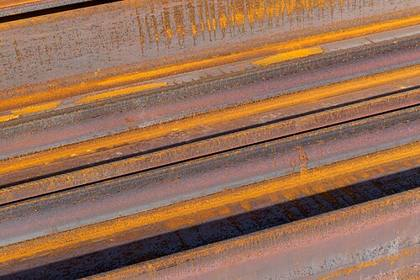
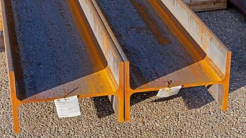
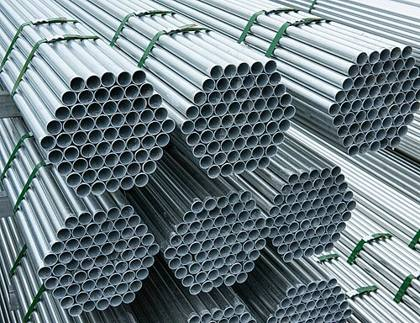
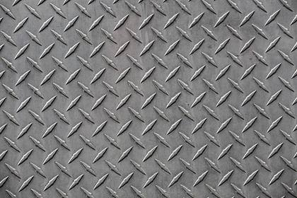
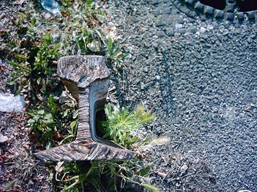

Read first – weight, grades and lengths
Key figures for traders. Weights are calculated line by line from the section sizes in the stock list; the lot is sold complete, not by line.
| What | Quantity |
|---|---|
| Total weight (approx.) 90% of the tonnage is calculated from the profile sizes (EN section tables, 7.85 kg/dm³); the rest is estimated. | ≈ 386 t |
| Grade S235JR General structural steel. | ≈ 218 t |
| Grade S355J2 Higher-strength structural steel. | ≈ 136 t |
| Grade not stated / other Mostly chequer plates and non-standard sections; plus rails (R260/R600) and stainless 1.4301 (≈ 1 t). | ≈ 31 t |
| Pieces up to 5.9 m Fit 20′ and 40′ containers. | 1,011 pcs · ≈ 170 t |
| Pieces 5.9–12.0 m Fit 40′ containers. | 826 pcs · ≈ 152 t |
| Pieces longer than 12.0 m 48 pieces at 12.1 m (≈ 23 t), the rest 14–15 m and one 21 m chequer plate: flat-rack / open-top containers, trucks, or cutting to length. | 71 pcs · ≈ 44 t |
| Sets and offcuts A set of 139 chequer plates (6 mm, up to 6 m), thick plate offcuts and a fabricated element. | 3 lines · ≈ 20 t |
Weights and length bands are calculated from the stock list; actual weights confirmed at loading.
HEA / HEB / HEM wide-flange beams 151 items · 210 pcs

Representative photo| Ref | Item | Type | Qty | Est. weight |
|---|---|---|---|---|
| Ref #617 | HEA-320 L-15100 S355J2 | HEA beam | 3 | ≈ 4.4 t |
| Ref #612 | HEA-200 L-12100 S235JR | HEA beam | 8 | ≈ 4.1 t |
| Ref #56 | HEA-300 L-12000 S235JR | HEA beam | 3 | ≈ 3.2 t |
| Ref #58 | HEA-200 L-15000 S355J2 | HEA beam | 4 | ≈ 2.5 t |
| Ref #22 | HEA-260 L-12000 S235JR | HEA beam | 3 | ≈ 2.5 t |
| Ref #1054 | HEA-160 L-15100 S235JR | HEA beam | 5 | ≈ 2.3 t |
| Ref #628 | HEA-300 L-12000 S355J2 | HEA beam | 2 | ≈ 2.1 t |
| Ref #613 | HEA-160 L-15100 S355J2 | HEA beam | 4 | ≈ 1.8 t |
| Ref #1082 | HEA-400 L-11500 S235JR | HEA beam | 1 | ≈ 1.4 t |
| Ref #667 | HEA-180 L-12000 S235JR | HEA beam | 3 | ≈ 1.3 t |
| Ref #472 | HEA-300 L-4690 S355J2 | HEA beam | 3 | ≈ 1.2 t |
| Ref #619 | HEA-280 L-15100 S235JR | HEA beam | 1 | ≈ 1.2 t |
| Ref #59 | HEA-160 L-12000 S355J2 | HEA beam | 3 | ≈ 1.1 t |
| Ref #633 | HEA-160 L-12000 S235JR | HEA beam | 3 | ≈ 1.1 t |
| Ref #154 | HEA-260 L-4000 S235JR | HEA beam | 4 | ≈ 1.1 t |
| Ref #209 | HEA-300 L-5900 S235JR | HEA beam | 2 | ≈ 1.0 t |
| Ref #377 | HEA-340 L-9900 S235JR | HEA beam | 1 | ≈ 1.0 t |
| Ref #471 | HEA-500 L-6700 S355J2 | HEA beam | 1 | ≈ 1.0 t |
| Ref #618 | HEA-260 L-15100 S355J2 | HEA beam | 1 | ≈ 1.0 t |
| Ref #630 | HEA-200 L-12000 S355J2 | HEA beam | 2 | ≈ 1.0 t |
| Ref #634 | HEA-200 L-12000 S355J2 | HEA beam | 2 | ≈ 1.0 t |
| Ref #666 | HEA-280 L-12000 S235JR | HEA beam | 1 | ≈ 0.9 t |
| Ref #620 | HEA-240 L-15100 S355J2 | HEA beam | 1 | ≈ 0.9 t |
| Ref #629 | HEA-260 L-12000 S235JR | HEA beam | 1 | ≈ 0.8 t |
| Ref #354 | HEA-450 L-5400 S235JR | HEA beam | 1 | ≈ 0.8 t |
| Ref #325 | HEA-600 L-4100 S235JR | HEA beam | 1 | ≈ 0.7 t |
| Ref #202 | HEA-240 L-12000 S355J2 | HEA beam | 1 | ≈ 0.7 t |
| Ref #624 | HEA-200 L-15100 S355J2 | HEA beam | 1 | ≈ 0.6 t |
| Ref #326 | HEA-500 L-3900 S355J2 | HEA beam | 1 | ≈ 0.6 t |
| Ref #543 | HEA-280 L-7400 S235JR | HEA beam | 1 | ≈ 0.6 t |
| Ref #311 | HEA-500 L-3600 S235JR | HEA beam | 1 | ≈ 0.6 t |
| Ref #210 | HEA-320 L-5700 S235JR | HEA beam | 1 | ≈ 0.6 t |
| Ref #309 | HEA-400 L-4350 S235JR | HEA beam | 1 | ≈ 0.5 t |
| Ref #211 | HEA-320 L-5200 S235JR | HEA beam | 1 | ≈ 0.5 t |
| Ref #18 | HEA-240 L-8300 S235JR | HEA beam | 1 | ≈ 0.5 t |
| Ref #965 | HEA-320 L-5000 S355J2 | HEA beam | 1 | ≈ 0.5 t |
| Ref #5 | HEA-400 L-3900 S235JR | HEA beam | 1 | ≈ 0.5 t |
| Ref #810 | HEA-300 L-2500 S235JR | HEA beam | 2 | ≈ 0.4 t |
| Ref #172 | HEA-240 L-3600 S355J2 | HEA beam | 2 | ≈ 0.4 t |
| Ref #203 | HEA-180 L-12000 S235JR | HEA beam | 1 | ≈ 0.4 t |
| Ref #1051 | HEA-180 L-12000 S235JR | HEA beam | 1 | ≈ 0.4 t |
| Ref #179 | HEA-300 L-4800 S355J2 | HEA beam | 1 | ≈ 0.4 t |
| Ref #313 | HEA-280 L-5500 S235JR | HEA beam | 1 | ≈ 0.4 t |
| Ref #347 | HEA-340 L-4000 S235JR | HEA beam | 1 | ≈ 0.4 t |
| Ref #321 | HEA-320 L-4200 S235JR | HEA beam | 1 | ≈ 0.4 t |
| Ref #327 | HEA-360 L-3600 S23JR | HEA beam | 1 | ≈ 0.4 t |
| Ref #473 | HEA-300 L-4500 S355J2 | HEA beam | 1 | ≈ 0.4 t |
| Ref #26 | HEA-200 L-9000 S235JR | HEA beam | 1 | ≈ 0.4 t |
| Ref #312 | HEA-400 L-2950 S235JR | HEA beam | 1 | ≈ 0.4 t |
| Ref #27 | HEA-160 L-12000 S235JR | HEA beam | 1 | ≈ 0.4 t |
| Ref #451 | HEA-120 L-3500 S355J2 | HEA beam | 5 | ≈ 0.3 t |
| Ref #353 | HEA-240 L-5500 S235JR | HEA beam | 1 | ≈ 0.3 t |
| Ref #1126 | HEA-350 L-2880 S235JR | HEA beam | 1 | ≈ 0.3 t |
| Ref #103 | HEA-280 L-4000 S235JR | HEA beam | 1 | ≈ 0.3 t |
| Ref #677 | HEA-160 L-10000 S235JR | HEA beam | 1 | ≈ 0.3 t |
| Ref #1127 | HEA-350 L-2700 S235JR | HEA beam | 1 | ≈ 0.3 t |
| Ref #324 | HEA-280 L-3800 S235JR | HEA beam | 1 | ≈ 0.3 t |
| Ref #206 | HEA-180 L-8000 S235JR | HEA beam | 1 | ≈ 0.3 t |
| Ref #208 | HEA-260 L-4000 S235JR | HEA beam | 1 | ≈ 0.3 t |
| Ref #355 | HEA-400 L-2100 S235JR | HEA beam | 1 | ≈ 0.3 t |
| Ref #352 | HEA-280 L-3300 S235JR | HEA beam | 1 | ≈ 0.3 t |
| Ref #676 | HEA-140 L-10000 S235JR | HEA beam | 1 | ≈ 0.2 t |
| Ref #970 | HEA-120 L-12000 S235JR | HEA beam | 1 | ≈ 0.2 t |
| Ref #952 | HEA-300 L-2700 S235JR | HEA beam | 1 | ≈ 0.2 t |
| Ref #403 | HEA-200 L-5600 S235JR | HEA beam | 1 | ≈ 0.2 t |
| Ref #1080 | HEA-100 L-14150 S235JR | HEA beam | 1 | ≈ 0.2 t |
| Ref #33 | HEA-160 L-7300 S355J2 | HEA beam | 1 | ≈ 0.2 t |
| Ref #542 | HEA-220 L-4300 S235JR | HEA beam | 1 | ≈ 0.2 t |
| Ref #13 | HEA-100 L-2500 S355J2 | HEA beam | 5 | ≈ 0.2 t |
| Ref #611 | HEA-100 L-12000 S235JR | HEA beam | 1 | ≈ 0.2 t |
| Ref #544 | HEA-160 L-6000 S235JR | HEA beam | 1 | ≈ 0.2 t |
| Ref #328 | HEA-240 L-3000 S235JR | HEA beam | 1 | ≈ 0.2 t |
| Ref #545 | HEA-120 L-8500 S235JR | HEA beam | 1 | ≈ 0.2 t |
| Ref #207 | HEA-120 L-7900 S235JR | HEA beam | 1 | ≈ 0.2 t |
| Ref #178 | HEA-120 L-6400 S235JR | HEA beam | 1 | ≈ 0.1 t |
| Ref #882 | HEA-120 L-6400 S235JR | HEA beam | 1 | ≈ 0.1 t |
| Ref #805 | HEA-140 L-4300 S235JR | HEA beam | 1 | ≈ 0.1 t |
| Ref #1014 | HEA-200 L-2300 S235JR | HEA beam | 1 | ≈ 0.1 t |
| Ref #450 | HEA-120 L-4050 S235JR | HEA beam | 1 | ≈ 0.1 t |
| Ref #14 | HEA-100 L-2950 S355J2 | HEA beam | 1 | ≈ 0.0 t |
| Ref #486 | HEA-120 L-2100 S235JR | HEA beam | 1 | ≈ 0.0 t |
| Ref #15 | HEA-100 L-2000 S355J2 | HEA beam | 1 | ≈ 0.0 t |
| Ref #627 | HEB-400 L-12100 S355J2 | HEB beam | 2 | ≈ 3.8 t |
| Ref #7 | HEB-400 L-2700 S355J2 | HEB beam | 7 | ≈ 2.9 t |
| Ref #397 | HEB-700 L-12100 S355J2 | HEB beam | 1 | ≈ 2.9 t |
| Ref #1081 | HEB-500 L-15100 355J2 | HEB beam | 1 | ≈ 2.8 t |
| Ref #1133 | HEB-400 L-10500 S235JR z przyspawanym UPE-160 | HEB beam | 1 | ≈ 1.6 t |
| Ref #640 | HEB-300 L-12100 S235JR | HEB beam | 1 | ≈ 1.4 t |
| Ref #358 | HEB-800 L-4600 S235JR | HEB beam | 1 | ≈ 1.2 t |
| Ref #293 | HEB-500 L-5800 S235JR | HEB beam | 1 | ≈ 1.1 t |
| Ref #345 | HEB-360 L-7200 S235JR | HEB beam | 1 | ≈ 1.0 t |
| Ref #21 | HEB-240 L-12000 S235JR | HEB beam | 1 | ≈ 1.0 t |
| Ref #381 | HEB-800 L-3700 S235JR | HEB beam | 1 | ≈ 1.0 t |
| Ref #297 | HEB-400 L-3100 S235JR | HEB beam | 2 | ≈ 1.0 t |
| Ref #1050 | HEB-220 L-12100 S235JR | HEB beam | 1 | ≈ 0.9 t |
| Ref #639 | HEB-300 L-7100 S235JR | HEB beam | 1 | ≈ 0.8 t |
| Ref #322 | HEB-550 L-4000 S235JR | HEB beam | 1 | ≈ 0.8 t |
| Ref #310 | HEB-500 L-4000 S235JR | HEB beam | 1 | ≈ 0.7 t |
| Ref #678 | HEB-220 L-10000 S235JR | HEB beam | 1 | ≈ 0.7 t |
| Ref #1134 | HEB-280 L-6900 S355J2 | HEB beam | 1 | ≈ 0.7 t |
| Ref #24 | HEB-120 L-12000 S235JR | HEB beam | 2 | ≈ 0.6 t |
| Ref #671 | HEB-200 L-10000 S355J2 | HEB beam | 1 | ≈ 0.6 t |
| Ref #176 | HEB-280 L-5900 S235JR | HEB beam | 1 | ≈ 0.6 t |
| Ref #315 | HEB-340 L-4200 S235JR | HEB beam | 1 | ≈ 0.6 t |
| Ref #25 | HEB-180 L-10800 S355J2 | HEB beam | 1 | ≈ 0.6 t |
| Ref #402 | HEB-220 L-7500 S235JR | HEB beam | 1 | ≈ 0.5 t |
| Ref #350 | HEB-220 L-3700 S235JR | HEB beam | 2 | ≈ 0.5 t |
| Ref #622 | HEB-160 L-12000 S355J2 | HEB beam | 1 | ≈ 0.5 t |
| Ref #631 | HEB-160 L-12000 S355J2 | HEB beam | 1 | ≈ 0.5 t |
| Ref #286 | HEB-260 L-5300 S235JR | HEB beam | 1 | ≈ 0.5 t |
| Ref #320 | HEB-400 L-2900 S235JR | HEB beam | 1 | ≈ 0.5 t |
| Ref #732 | HEB-140 L-12100 S355J2 | HEB beam | 1 | ≈ 0.4 t |
| Ref #348 | HEB-220 L-5700 S235JR | HEB beam | 1 | ≈ 0.4 t |
| Ref #679 | HEB-140 L-12000 S235JR | HEB beam | 1 | ≈ 0.4 t |
| Ref #346 | HEB-280 L-3700 S235JR | HEB beam | 1 | ≈ 0.4 t |
| Ref #914 | HEB-300 L-3200 S235JR | HEB beam | 1 | ≈ 0.4 t |
| Ref #338 | HEB-260 L-3550 S235JR | HEB beam | 1 | ≈ 0.3 t |
| Ref #153 | HEB-300 L-2800 S235JR | HEB beam | 1 | ≈ 0.3 t |
| Ref #623 | HEB-120 L-12000 S355J2 | HEB beam | 1 | ≈ 0.3 t |
| Ref #669 | HEB-120 L-12000 S235JR | HEB beam | 1 | ≈ 0.3 t |
| Ref #364 | HEB-320 L-2500 S235JR | HEB beam | 1 | ≈ 0.3 t |
| Ref #1015 | HEB-280 L-3000 S235JR | HEB beam | 1 | ≈ 0.3 t |
| Ref #344 | HEB-240 L-3600 S235JR | HEB beam | 1 | ≈ 0.3 t |
| Ref #306 | HEB-240 L-3200 S235JR | HEB beam | 1 | ≈ 0.3 t |
| Ref #337 | HEB-240 L-3100 S235JR | HEB beam | 1 | ≈ 0.3 t |
| Ref #940 | HEB-160 L-6000 S235JR | HEB beam | 1 | ≈ 0.3 t |
| Ref #885 | HEB-220 L-3500 S235JR | HEB beam | 1 | ≈ 0.2 t |
| Ref #349 | HEB-220 L-3300 S235JR | HEB beam | 1 | ≈ 0.2 t |
| Ref #284 | HEB-180 L-4600 S235JR | HEB beam | 1 | ≈ 0.2 t |
| Ref #941 | HEB-160 L-5300 S235JR | HEB beam | 1 | ≈ 0.2 t |
| Ref #951 | HEB-300 L-1900 S235JR | HEB beam | 1 | ≈ 0.2 t |
| Ref #307 | HEB-180 L-4300 S235JR | HEB beam | 1 | ≈ 0.2 t |
| Ref #343 | HEB-240 L-2600 S235JR | HEB beam | 1 | ≈ 0.2 t |
| Ref #645 | HEB-200 L-3000 S355J2 | HEB beam | 1 | ≈ 0.2 t |
| Ref #697 | HEB-220 L-2550 S355J2 | HEB beam | 1 | ≈ 0.2 t |
| Ref #282 | HEB-160 L-4200 S235JR | HEB beam | 1 | ≈ 0.2 t |
| Ref #155 | HEB-200 L-2800 S235JR | HEB beam | 1 | ≈ 0.2 t |
| Ref #251 | HEB-120 L-3000 S235JR | HEB beam | 2 | ≈ 0.2 t |
| Ref #292 | HEB-140 L-4500 S235JR | HEB beam | 1 | ≈ 0.2 t |
| Ref #188 | HEB-100 L-5800 S355J2 | HEB beam | 1 | ≈ 0.1 t |
| Ref #8 | HEB-120 L-3900 S237JR | HEB beam | 1 | ≈ 0.1 t |
| Ref #196 | HEB-160 L-1900 S235JR | HEB beam | 1 | ≈ 0.1 t |
| Ref #839 | HEB-100 L-3800 S235JR | HEB beam | 1 | ≈ 0.1 t |
| Ref #252 | HEB-120 L-2200 S235JR | HEB beam | 1 | ≈ 0.1 t |
| Ref #363 | HEM-260 L-10300 S355J2 | HEM beam | 1 | ≈ 1.8 t |
| Ref #470 | HEM-400 L-6700 S355J2 | HEM beam | 1 | ≈ 1.7 t |
| Ref #351 | HEM-450 L-6300 S235JR | HEM beam | 1 | ≈ 1.7 t |
| Ref #362 | HEM-220 L-9100 S235JR | HEM beam | 1 | ≈ 1.1 t |
| Ref #9 | HEM-700 L-3000 S355J2 | HEM beam | 1 | ≈ 0.9 t |
| Ref #10 | HEM-700 L-2700 S355J2 | HEM beam | 1 | ≈ 0.8 t |
| Ref #340 | HEM-140 L-4100 S235JR | HEM beam | 1 | ≈ 0.3 t |
Steel plates 2–40 mm 145 items · 189 pcs · 1 set
| Ref | Item | Type | Qty | Est. weight |
|---|---|---|---|---|
| Ref #87 | Blacha 20x2000x12000 S355J2 | Steel plate 12–20 mm | 1 | ≈ 3.8 t |
| Ref #588 | Blacha 12x2000x6000 S355J2 | Steel plate 12–20 mm | 3 | ≈ 3.4 t |
| Ref #88 | Blacha 20x2000x10000 S355J2 | Steel plate 12–20 mm | 1 | ≈ 3.1 t |
| Ref #602 | Blacha 16x2000x6000 S355J2 | Steel plate 12–20 mm | 1 | ≈ 1.5 t |
| Ref #1109 | Blacha 15x2000x4700 S355J2 | Steel plate 12–20 mm | 1 | ≈ 1.1 t |
| Ref #79 | Blacha 14x1000x9000 S355J2 | Steel plate 12–20 mm | 1 | ≈ 1.0 t |
| Ref #586 | Blacha 15x2000x4200 S235JR | Steel plate 12–20 mm | 1 | ≈ 1.0 t |
| Ref #609 | Blacha 12x1500x6000 S235JR | Steel plate 12–20 mm | 1 | ≈ 0.8 t |
| Ref #106 | Blacha 14x2000x3100 S235JR | Steel plate 12–20 mm | 1 | ≈ 0.7 t |
| Ref #1205 | Blacha 15x700x8000 S355J2 | Steel plate 12–20 mm | 1 | ≈ 0.7 t |
| Ref #464 | Blacha 12x2000x3000 S355J2 | Steel plate 12–20 mm | 1 | ≈ 0.6 t |
| Ref #646 | Blacha 14x450x10800 S235JR | Steel plate 12–20 mm | 1 | ≈ 0.5 t |
| Ref #647 | Blacha 15x410x10500 S355J2 | Steel plate 12–20 mm | 1 | ≈ 0.5 t |
| Ref #468 | Blacha 14x2000x2000 S235JR | Steel plate 12–20 mm | 1 | ≈ 0.4 t |
| Ref #501 | Blacha 20x2000x1400 S235JR | Steel plate 12–20 mm | 1 | ≈ 0.4 t |
| Ref #219 | Blacha 16x1500x2000 S235JR | Steel plate 12–20 mm | 1 | ≈ 0.4 t |
| Ref #369 | Blacha gięta 5100x450x20 | Steel plate 12–20 mm | 1 | ≈ 0.4 t |
| Ref #1121 | Blacha nieregularna 15x600x4160 S355J2 | Steel plate 12–20 mm | 1 | ≈ 0.3 t |
| Ref #1155 | Blacha 12x700x4400 S235JR | Steel plate 12–20 mm | 1 | ≈ 0.3 t |
| Ref #959 | Blacha 18x900x2000 S235JR | Steel plate 12–20 mm | 1 | ≈ 0.3 t |
| Ref #467 | Blacha 16x2000x1000 S235JR | Steel plate 12–20 mm | 1 | ≈ 0.3 t |
| Ref #1107 | Blacha nieregularna 16x1500x1200x600x800 S235JR | Steel plate 12–20 mm | 1 | ≈ 0.2 t |
| Ref #648 | Blacha 14x370x4850 S355J2 | Steel plate 12–20 mm | 1 | ≈ 0.2 t |
| Ref #280 | Blacha 12x1000x2000 S355J2 | Steel plate 12–20 mm | 1 set | ≈ 0.1–0.2 t |
| Ref #960 | Blacha 15x650x2000 S235JR | Steel plate 12–20 mm | 1 | ≈ 0.2 t |
| Ref #589 | Blacha nieregularna 16x1500x800x1100x1500 S355J2 | Steel plate 12–20 mm | 1 | ≈ 0.2 t |
| Ref #279 | Blacha 12x340x2920 S235JR | Steel plate 12–20 mm | 1 | ≈ 0.1 t |
| Ref #89 | Blacha 10x2000x8800 S355J2 | Steel plate 6–10 mm | 1 | ≈ 1.4 t |
| Ref #1213 | Blacha 6x1000x2500 S355J2 | Steel plate 6–10 mm | 10 | ≈ 1.2 t |
| Ref #1042 | Blacha 6x320x5000 nieregularny kształt S355J2 | Steel plate 6–10 mm | 11 | ≈ 0.8 t |
| Ref #587 | Blacha 8x1400x6400 S235JR | Steel plate 6–10 mm | 1 | ≈ 0.6 t |
| Ref #603 | Blacha nieregularna 10x1100x6000 XAR400 | Steel plate 6–10 mm | 1 | ≈ 0.5 t |
| Ref #1226 | Blacha 8x300x3300 S355J2 | Steel plate 6–10 mm | 8 | ≈ 0.5 t |
| Ref #1160 | Blacha 8x720x3000 S235JR | Steel plate 6–10 mm | 3 | ≈ 0.4 t |
| Ref #1218 | Blacha 8x1250x2500 S355J2 | Steel plate 6–10 mm | 2 | ≈ 0.4 t |
| Ref #601 | Blacha 8x1030x6000 S355J2 | Steel plate 6–10 mm | 1 | ≈ 0.4 t |
| Ref #664 | Blacha 8x930x6500 S235JR | Steel plate 6–10 mm | 1 | ≈ 0.4 t |
| Ref #605 | Blacha 10x2000x2200 XAR400 | Steel plate 6–10 mm | 1 | ≈ 0.3 t |
| Ref #950 | Blacha 10x2800x1500 S235JR malowana | Steel plate 6–10 mm | 1 | ≈ 0.3 t |
| Ref #958 | Blacha 8x825x6200 środkiem wyrzłobiona | Steel plate 6–10 mm | 1 | ≈ 0.3 t |
| Ref #1114 | Blacha 8x1500x3000 S235JR | Steel plate 6–10 mm | 1 | ≈ 0.3 t |
| Ref #607 | Blacha nieregularna 10x1000x3500 Hardox | Steel plate 6–10 mm | 1 | ≈ 0.3 t |
| Ref #1150 | Blacha nieregularna 10x1400x2500 S355J2 | Steel plate 6–10 mm | 1 | ≈ 0.3 t |
| Ref #1223 | Blacha 10x450x3800 S355J2 | Steel plate 6–10 mm | 2 | ≈ 0.3 t |
| Ref #1112 | Blacha 8x1700x2500 S355J2 | Steel plate 6–10 mm | 1 | ≈ 0.3 t |
| Ref #1149 | Blacha 10x2200x1500 S235JR | Steel plate 6–10 mm | 1 | ≈ 0.3 t |
| Ref #1110 | Blacha nieregularna 10x2900x1100 S235JR | Steel plate 6–10 mm | 1 | ≈ 0.2 t |
| Ref #962 | Blacha 10x450x6000 S235JR | Steel plate 6–10 mm | 1 | ≈ 0.2 t |
| Ref #595 | Blacha 6x1260x3570 S355J2 | Steel plate 6–10 mm | 1 | ≈ 0.2 t |
| Ref #608 | Blacha nieregularna 10x1000x2500 Hardox | Steel plate 6–10 mm | 1 | ≈ 0.2 t |
| Ref #1106 | Blacha 8x3000x990 S235JR | Steel plate 6–10 mm | 1 | ≈ 0.2 t |
| Ref #1199 | Blacha 8x1420x2000 S235JR | Steel plate 6–10 mm | 1 | ≈ 0.2 t |
| Ref #606 | Blacha 6x1290x2930 S355J2 | Steel plate 6–10 mm | 1 | ≈ 0.2 t |
| Ref #1222 | Blacha 10x330x3300 S355J2 | Steel plate 6–10 mm | 2 | ≈ 0.2 t |
| Ref #1163 | Blacha 10x520x2000 S355J2 | Steel plate 6–10 mm | 2 | ≈ 0.2 t |
| Ref #1113 | Blacha 8x990x2500 S355J2 | Steel plate 6–10 mm | 1 | ≈ 0.2 t |
| Ref #594 | Blacha 6x410x4000 S235JR | Steel plate 6–10 mm | 2 | ≈ 0.2 t |
| Ref #1200 | Blacha 6x1260x2500 S355J2 | Steel plate 6–10 mm | 1 | ≈ 0.1 t |
| Ref #1225 | Blacha 8x750x3000 S355J2 | Steel plate 6–10 mm | 1 | ≈ 0.1 t |
| Ref #596 | Blacha 6x1520x1970 S355J2 | Steel plate 6–10 mm | 1 | ≈ 0.1 t |
| Ref #1227 | Blacha 8x1750x1100 S235JR | Steel plate 6–10 mm | 1 | ≈ 0.1 t |
| Ref #592 | Blacha nieregularna 6x600x4250 S355J2 | Steel plate 6–10 mm | 1 | ≈ 0.1 t |
| Ref #598 | Blacha nieregularna 8x600x3000x900x1000 S235JR | Steel plate 6–10 mm | 1 | ≈ 0.1 t |
| Ref #1043 | Blacha 6x400x2000 nieregularny kształt S355J2 | Steel plate 6–10 mm | 3 | ≈ 0.1 t |
| Ref #1119 | Blacha 6x1500x1600 S235JR | Steel plate 6–10 mm | 1 | ≈ 0.1 t |
| Ref #1137 | Blacha 8x900x2000 S355J2 | Steel plate 6–10 mm | 1 | ≈ 0.1 t |
| Ref #1161 | Blacha 8x720x2500 S235JR | Steel plate 6–10 mm | 1 | ≈ 0.1 t |
| Ref #651 | Blacha 6x615x3900 S355J2 | Steel plate 6–10 mm | 1 | ≈ 0.1 t |
| Ref #597 | Blacha nieregularna 6x600x3740 S355J2 | Steel plate 6–10 mm | 1 | ≈ 0.1 t |
| Ref #1135 | Blacha 8x1100x1500 S235JR | Steel plate 6–10 mm | 1 | ≈ 0.1 t |
| Ref #652 | Blacha 6x850x2300 S355J2 | Steel plate 6–10 mm | 1 | ≈ 0.1 t |
| Ref #1115 | Blacha nieregularna 8x1000x1250x500x1700 S235JR | Steel plate 6–10 mm | 1 | ≈ 0.1 t |
| Ref #1152 | Blacha nieregularna 8x1500x800x700x680 S235JR | Steel plate 6–10 mm | 1 | ≈ 0.1 t |
| Ref #1217 | Blacha 8x580x2000 S355J2 | Steel plate 6–10 mm | 1 | ≈ 0.1 t |
| Ref #502 | Blacha 10x690x1300 S355J2 | Steel plate 6–10 mm | 1 | ≈ 0.1 t |
| Ref #1111 | Blacha nieregularna 8x1400x800x2700x1600 S355J2 | Steel plate 6–10 mm | 1 | ≈ 0.1 t |
| Ref #1143 | Blacha 6x600x2000 S235JR | Steel plate 6–10 mm | 1 | ≈ 0.1 t |
| Ref #1136 | Blacha 8x720x1230 S235JR | Steel plate 6–10 mm | 1 | ≈ 0.1 t |
| Ref #1215 | Blacha 8x650x1350 S355J2 | Steel plate 6–10 mm | 1 | ≈ 0.1 t |
| Ref #1122 | Blacha 6x700x1440 S355J2 | Steel plate 6–10 mm | 1 | ≈ 0.0 t |
| Ref #1142 | Blacha 6x1000x1000 S235JR | Steel plate 6–10 mm | 1 | ≈ 0.0 t |
| Ref #1216 | Blacha 8x500x1500 S355J2 | Steel plate 6–10 mm | 1 | ≈ 0.0 t |
| Ref #1224 | Blacha 8x670x1000 S355J2 | Steel plate 6–10 mm | 1 | ≈ 0.0 t |
| Ref #665 | Blacha 6x440x1900 S235JR | Steel plate 6–10 mm | 1 | ≈ 0.0 t |
| Ref #1141 | Blacha 6x280x2500 S355J2 | Steel plate 6–10 mm | 1 | ≈ 0.0 t |
| Ref #145 | Blacha 6x340x1750 S235JR | Steel plate 6–10 mm | 1 | ≈ 0.0 t |
| Ref #500 | Blacha 40x2500x4000 S355J2 | Steel plate > 20 mm | 1 | ≈ 3.1 t |
| Ref #582 | Blacha 36x2000x4900 S235JR | Steel plate > 20 mm | 1 | ≈ 2.8 t |
| Ref #366 | Blacha 1850x2000x80 S235JR | Steel plate > 20 mm | 1 | ≈ 2.3 t |
| Ref #583 | Blacha 35x2000x4200 S235JR | Steel plate > 20 mm | 1 | ≈ 2.3 t |
| Ref #220 | Blacha 55x2060x2400 S355JR | Steel plate > 20 mm | 1 | ≈ 2.1 t |
| Ref #465 | Blacha 40x2000x3000 S235JR | Steel plate > 20 mm | 1 | ≈ 1.9 t |
| Ref #826 | Blacha 40x2000x2800 S235JR | Steel plate > 20 mm | 1 | ≈ 1.8 t |
| Ref #368 | Blacha gięta 5100x1000x35 | Steel plate > 20 mm | 1 | ≈ 1.4 t |
| Ref #1060 | Blacha 30x700x8100 S235JR | Steel plate > 20 mm | 1 | ≈ 1.3 t |
| Ref #1206 | Blacha 35x570x8000 S355J2 | Steel plate > 20 mm | 1 | ≈ 1.3 t |
| Ref #221 | Blacha 45x2000x1700 S355J2 | Steel plate > 20 mm | 1 | ≈ 1.2 t |
| Ref #434 | Blacha 25x2000x3000 S355J2 | Steel plate > 20 mm | 1 | ≈ 1.2 t |
| Ref #222 | Blacha 35x2000x2100 S355J2 | Steel plate > 20 mm | 1 | ≈ 1.2 t |
| Ref #1123 | Blacha 35x2000x2000 S355J2 | Steel plate > 20 mm | 1 | ≈ 1.1 t |
| Ref #600 | Blacha 30x1500x3100 S235JR | Steel plate > 20 mm | 1 | ≈ 1.1 t |
| Ref #1228 | Blacha 30x780x5100 S235JR | Steel plate > 20 mm | 1 | ≈ 0.9 t |
| Ref #1105 | Blacha 30x2500x1500 S235JR | Steel plate > 20 mm | 1 | ≈ 0.9 t |
| Ref #1159 | Blacha 40x1400x2000 S235JR | Steel plate > 20 mm | 1 | ≈ 0.9 t |
| Ref #1198 | Blacha nieregularna 110x790x1200x890x2000 S235JR | Steel plate > 20 mm | 1 | ≈ 0.8 t |
| Ref #1153 | Blacha 34x860x3500 S235JR | Steel plate > 20 mm | 1 | ≈ 0.8 t |
| Ref #466 | Blacha 25x2000x2000 S355J2 | Steel plate > 20 mm | 1 | ≈ 0.8 t |
| Ref #469 | Blacha 25x2000x2000 S355J2 | Steel plate > 20 mm | 1 | ≈ 0.8 t |
| Ref #367 | Blacha 920x1170x90 S355J2 | Steel plate > 20 mm | 1 | ≈ 0.8 t |
| Ref #1197 | Blacha 40x1150x2000 S355J2 | Steel plate > 20 mm | 1 | ≈ 0.7 t |
| Ref #503 | Blacha 30x2000x1400 S355J2 | Steel plate > 20 mm | 1 | ≈ 0.7 t |
| Ref #584 | Blacha 22x1900x2000 S235JR | Steel plate > 20 mm | 1 | ≈ 0.7 t |
| Ref #1156 | Blacha 28x570x5150 S235JR | Steel plate > 20 mm | 1 | ≈ 0.6 t |
| Ref #590 | Blacha nieregularna 30x1200x2000 S235JR | Steel plate > 20 mm | 1 | ≈ 0.6 t |
| Ref #599 | Blacha nieregularna 30x1500x1500 S235JR | Steel plate > 20 mm | 1 | ≈ 0.5 t |
| Ref #1201 | Blacha 45x800x1740 S355J2 | Steel plate > 20 mm | 1 | ≈ 0.5 t |
| Ref #649 | Blacha 55x285x3850 S355J2 | Steel plate > 20 mm | 1 | ≈ 0.5 t |
| Ref #656 | Blacha 30x1000x2000 S235JR | Steel plate > 20 mm | 1 | ≈ 0.5 t |
| Ref #591 | Blacha "półksiężyc" 35x1300x1300 S235JR | Steel plate > 20 mm | 1 | ≈ 0.5 t |
| Ref #1162 | Blacha 30x970x2000 S355J2 | Steel plate > 20 mm | 1 | ≈ 0.5 t |
| Ref #1158 | Blacha 35x1100x1500 S355J2 | Steel plate > 20 mm | 1 | ≈ 0.5 t |
| Ref #650 | Blacha 55x290x3550 S355J2 | Steel plate > 20 mm | 1 | ≈ 0.4 t |
| Ref #961 | Blacha 30x900x2000 S235JR | Steel plate > 20 mm | 1 | ≈ 0.4 t |
| Ref #1154 | Blacha 30x430x3900 S235JR | Steel plate > 20 mm | 1 | ≈ 0.4 t |
| Ref #1202 | Blacha 35x790x1530 S235JR | Steel plate > 20 mm | 1 | ≈ 0.3 t |
| Ref #585 | Blacha nieregularna 22x580x3200x570x1500 S355J2 | Steel plate > 20 mm | 1 | ≈ 0.3 t |
| Ref #1157 | Blacha nieregularna 25x2000x800x1000x540 S235JR | Steel plate > 20 mm | 1 | ≈ 0.3 t |
| Ref #654 | Blacha 30x870x1500 S235JR | Steel plate > 20 mm | 1 | ≈ 0.3 t |
| Ref #657 | Blacha 40x500x1750 S235JR | Steel plate > 20 mm | 1 | ≈ 0.3 t |
| Ref #655 | Blacha 30x550x800 S355J2 | Steel plate > 20 mm | 1 | ≈ 0.1 t |
| Ref #593 | Blacha 5x1500x6000 S355J2 | Steel plate ≤ 5 mm | 1 | ≈ 0.4 t |
| Ref #218 | Blacha 5x1000x2000 S235JR | Steel plate ≤ 5 mm | 4 | ≈ 0.3 t |
| Ref #653 | Blacha 5x650x3150 S235JR | Steel plate ≤ 5 mm | 3 | ≈ 0.2 t |
| Ref #1108 | Blacha 3x2000x4000 S235JR | Steel plate ≤ 5 mm | 1 | ≈ 0.2 t |
| Ref #604 | Blacha nieregularna 5x900x5000x500x2680 Hardox | Steel plate ≤ 5 mm | 1 | ≈ 0.2 t |
| Ref #1219 | Blacha 5x340x2000 S355J2 | Steel plate ≤ 5 mm | 4 | ≈ 0.1 t |
| Ref #1117 | Blacha 3x1500x3000 S235JR | Steel plate ≤ 5 mm | 1 | ≈ 0.1 t |
| Ref #1116 | Blacha 4x1500x1500 S235JR | Steel plate ≤ 5 mm | 1 | ≈ 0.1 t |
| Ref #581 | Blacha 2x1500x2900 S355J2 | Steel plate ≤ 5 mm | 1 | ≈ 0.1 t |
| Ref #217 | Blacha 4x1000x2000 S235JR | Steel plate ≤ 5 mm | 1 | ≈ 0.1 t |
| Ref #1220 | Blacha 5x700x2000 S355J2 | Steel plate ≤ 5 mm | 1 | ≈ 0.1 t |
| Ref #152 | Blacha 1,5x1500x2400 S235JR | Steel plate ≤ 5 mm | 1 | ≈ 0.0 t |
| Ref #144 | Blacha 5x410x2530 S235JR | Steel plate ≤ 5 mm | 1 | ≈ 0.0 t |
| Ref #580 | Blacha 3x1650x1000 S355J2 | Steel plate ≤ 5 mm | 1 | ≈ 0.0 t |
| Ref #579 | Blacha 1,5x1500x2000 S235JR | Steel plate ≤ 5 mm | 1 | ≈ 0.0 t |
Square & rectangular hollow sections 224 items · 291 pcs
| Ref | Item | Type | Qty | Est. weight |
|---|---|---|---|---|
| Ref #19 | Profil prostokątny 150x100x4 L-12000 S235JR | Rectangular hollow section | 12 | ≈ 2.2 t |
| Ref #932 | Rura prostokątna 150x110x10 L-12000 S235JR | Rectangular hollow section | 2 | ≈ 0.9 t |
| Ref #933 | Rura prostokątna 120x90x9 L-12000 S235JR | Rectangular hollow section | 2 | ≈ 0.7 t |
| Ref #717 | Rura prostokątna 200x120x12,5 L-10000 S235JR | Rectangular hollow section | 1 | ≈ 0.6 t |
| Ref #714 | Rura prostokątna 200x120x10 L-12000 S235JR | Rectangular hollow section | 1 | ≈ 0.6 t |
| Ref #1021 | Rura prostokątna 180x100x6 L-2550 S235JR | Rectangular hollow section | 5 | ≈ 0.3 t |
| Ref #782 | Rura prostokątna 180x100x6,3 L-12000 S235JR | Rectangular hollow section | 1 | ≈ 0.3 t |
| Ref #1187 | Rura prostokątna 240x170x10 L-2500 S235JR | Rectangular hollow section | 2 | ≈ 0.3 t |
| Ref #1210 | Rura prostokątna 140x80x10 L-9400 S235JR | Rectangular hollow section | 1 | ≈ 0.3 t |
| Ref #983 | Rura prostokątna 200x120x6 L-8900 S235JR | Rectangular hollow section | 1 | ≈ 0.3 t |
| Ref #763 | Rura prostokątna 150x100x8 L-7900 S235JR | Rectangular hollow section | 1 | ≈ 0.2 t |
| Ref #984 | Rura prostokątna 200x120x6 L-7900 S235JR | Rectangular hollow section | 1 | ≈ 0.2 t |
| Ref #781 | Rura prostokątna 140x80x8 L-8900 S355J2 | Rectangular hollow section | 1 | ≈ 0.2 t |
| Ref #711 | Rura prostokątna 150x100x5 L-12000 S235JR | Rectangular hollow section | 1 | ≈ 0.2 t |
| Ref #762 | Rura prostokątna 150x100x5 L-11600 S235JR | Rectangular hollow section | 1 | ≈ 0.2 t |
| Ref #774 | Rura prostokątna 120x80x6 L-12000 S235JR | Rectangular hollow section | 1 | ≈ 0.2 t |
| Ref #783 | Rura prostokątna 120x80x6 L-12000 S235JR | Rectangular hollow section | 1 | ≈ 0.2 t |
| Ref #1092 | Rura prostokątna 120x80x5 L-12100 S235JR | Rectangular hollow section | 1 | ≈ 0.2 t |
| Ref #495 | Rura prostokątna 200x120x6 L-6200 S235JR | Rectangular hollow section | 1 | ≈ 0.2 t |
| Ref #773 | Rura prostokątna 120x80x5 L-12000 S235JR | Rectangular hollow section | 1 | ≈ 0.2 t |
| Ref #494 | Rura prostokątna 200x120x6 L-6000 S235JR | Rectangular hollow section | 1 | ≈ 0.2 t |
| Ref #891 | Rura prostokątna 120x80x6 L-9500 S235JR | Rectangular hollow section | 1 | ≈ 0.2 t |
| Ref #982 | Rura prostokątna 180x100x4 L-9600 S235JR | Rectangular hollow section | 1 | ≈ 0.2 t |
| Ref #890 | Rura prostokątna 160x80x5 L-9000 S235JR | Rectangular hollow section | 1 | ≈ 0.2 t |
| Ref #784 | Rura prostokątna 120x80x6 L-9000 S235JR | Rectangular hollow section | 1 | ≈ 0.2 t |
| Ref #764 | Rura prostokątna 150x100x5 L-8400 S235JR | Rectangular hollow section | 1 | ≈ 0.2 t |
| Ref #786 | Rura prostokątna 150x100x5 L-8300 S235JR | Rectangular hollow section | 1 | ≈ 0.2 t |
| Ref #183 | Rura prostokątina 180x100x6 L-6000 S235JR | Rectangular hollow section | 1 | ≈ 0.2 t |
| Ref #498 | Rura prostokątna 200x100x5 L-6400 S355J2 | Rectangular hollow section | 1 | ≈ 0.1 t |
| Ref #757 | Rura prostokątna 140x80x5 L-8800 S235JR | Rectangular hollow section | 1 | ≈ 0.1 t |
| Ref #779 | Rura prostokątna 120x80x4 L-12000 S355J2 | Rectangular hollow section | 1 | ≈ 0.1 t |
| Ref #168 | Rura prostokątna 200x150x6 L-4500 S355J2 | Rectangular hollow section | 1 | ≈ 0.1 t |
| Ref #496 | Rura prostokątna 200x120x6 L-4900 S235JR | Rectangular hollow section | 1 | ≈ 0.1 t |
| Ref #497 | Rura prostokątna 120x80x10 L-5000 S235JR | Rectangular hollow section | 1 | ≈ 0.1 t |
| Ref #242 | Rura prostokątna 120x80x6 L-7400 S235JR | Rectangular hollow section | 1 | ≈ 0.1 t |
| Ref #948 | Rura prostokątna 140x80x5 L-7300 S235JR malowana | Rectangular hollow section | 1 | ≈ 0.1 t |
| Ref #547 | Rura prostokątna 120x100x6 L-6000 S355J2 | Rectangular hollow section | 1 | ≈ 0.1 t |
| Ref #1181 | Rura prostokątna 200x120x6 L-3950 S235JR | Rectangular hollow section | 1 | ≈ 0.1 t |
| Ref #490 | Rura prostokątna 120x80x8 L-4900 S235JR | Rectangular hollow section | 1 | ≈ 0.1 t |
| Ref #156 | Rura prostokątna 200x150x5 L-4200 S235JR | Rectangular hollow section | 1 | ≈ 0.1 t |
| Ref #69 | Rura prostokątna 140x100x5 L-6000 S235JR | Rectangular hollow section | 1 | ≈ 0.1 t |
| Ref #457 | Rura prostokątna 180x100x6 L-3900 S235JR | Rectangular hollow section | 1 | ≈ 0.1 t |
| Ref #975 | Rura prostokątna 180x100x8 L-2950 S235JR | Rectangular hollow section | 1 | ≈ 0.1 t |
| Ref #986 | Rura prostokątna 180x100x4 L-5480 S235JR | Rectangular hollow section | 1 | ≈ 0.1 t |
| Ref #189 | Rura prostokątna 120x80x8 L-3400 S235JR | Rectangular hollow section | 1 | ≈ 0.1 t |
| Ref #1023 | Rura prostokątna 140x80x6 L-4000 S235JR | Rectangular hollow section | 1 | ≈ 0.1 t |
| Ref #893 | Rura prostokątna 120x60x4 L-7200 S235JR | Rectangular hollow section | 1 | ≈ 0.1 t |
| Ref #894 | Rura prostokątna 160x80x4 L-5240 S235JR malowana | Rectangular hollow section | 1 | ≈ 0.1 t |
| Ref #832 | Rura prostokątna 150x100x4 L-5000 S235JR | Rectangular hollow section | 1 | ≈ 0.1 t |
| Ref #564 | Rura prostokątna 150x100x5 L-3900 S355J2 | Rectangular hollow section | 1 | ≈ 0.1 t |
| Ref #1093 | Rura prostokątna 100x60x3 L-10100 S235JR | Rectangular hollow section | 1 | ≈ 0.1 t |
| Ref #806 | Rura prostokątna 120x80x5 L-4800 S235JR | Rectangular hollow section | 1 | ≈ 0.1 t |
| Ref #519 | Rura prostokątna 120x60x5 L-4300 S235JR | Rectangular hollow section | 1 | ≈ 0.1 t |
| Ref #541 | Rura prostokątna 120x80x6 L-3000 S355J2 | Rectangular hollow section | 1 | ≈ 0.1 t |
| Ref #537 | Rura prostokątna 120x80x4 L-4300 S235JR | Rectangular hollow section | 1 | ≈ 0.1 t |
| Ref #1022 | Rura prostokątna 120x60x4 L-2300 S235JR | Rectangular hollow section | 2 | ≈ 0.1 t |
| Ref #575 | Rura prostokątna 150x100x4 L-2850 S355J2 | Rectangular hollow section | 1 | ≈ 0.0 t |
| Ref #159 | Rura prostokątna 120x60x4 L-4000 S235JR | Rectangular hollow section | 1 | ≈ 0.0 t |
| Ref #1025 | Rura prostokątna 120x80x5 L-2600 S235JR | Rectangular hollow section | 1 | ≈ 0.0 t |
| Ref #158 | Rura prostokątna 120x60x4 L-3400 S235JR | Rectangular hollow section | 1 | ≈ 0.0 t |
| Ref #192 | Rura prostokątna 120x60x5 L-2700 S235JR | Rectangular hollow section | 1 | ≈ 0.0 t |
| Ref #1071 | Rura prostokątna 80x40x4 L-4980 S235JR | Rectangular hollow section | 1 | ≈ 0.0 t |
| Ref #1048 | Rura prostokątna 180x100x6 L-1380 S235JR | Rectangular hollow section | 1 | ≈ 0.0 t |
| Ref #433 | Rura prostokątna 80x60x3 L-5200 S235JR | Rectangular hollow section | 1 | ≈ 0.0 t |
| Ref #124 | Profil prostokątny 80x40x3 L-6000 S235JR | Rectangular hollow section | 1 | ≈ 0.0 t |
| Ref #422 | Rura prostokątna 120x60x4 L-2900 S235JR | Rectangular hollow section | 1 | ≈ 0.0 t |
| Ref #1188 | Rura prostokątna 100x100x3 L-2350 S235JR | Rectangular hollow section | 1 | ≈ 0.0 t |
| Ref #160 | Rura prostokątna 120x60x4 L-1900 S235JR | Rectangular hollow section | 1 | ≈ 0.0 t |
| Ref #6 | RK-400x20 L-3900 S355J2 | Square hollow section | 5 | ≈ 4.7 t |
| Ref #301 | Rura kwadratowa 200x8 L-3600 S355J2 | Square hollow section | 6 | ≈ 1.0 t |
| Ref #67 | Rura kwadratowa 48,3x4 L-12000 S235JR | Square hollow section | 15 | ≈ 1.0 t |
| Ref #1087 | Rura kwadratowa 100x100x4 L-12000 S235JR | Square hollow section | 6 | ≈ 0.9 t |
| Ref #710 | Rura kwadratowa 260x260x12 L-8980 S355J2 | Square hollow section | 1 | ≈ 0.8 t |
| Ref #357 | Rura kwadratowa 250x10 L-8600 S235JR | Square hollow section | 1 | ≈ 0.6 t |
| Ref #777 | Rura kwadratowa 160x160x12 L-9900 S235JR | Square hollow section | 1 | ≈ 0.6 t |
| Ref #174 | Rura kwadratowa 400x18 L-2400 S235JR | Square hollow section | 1 | ≈ 0.5 t |
| Ref #966 | Rura kwadratowa 200x200x12 L-6750 S235JR łączona | Square hollow section | 1 | ≈ 0.5 t |
| Ref #778 | Rura kwadratowa 160x160x4 L-12000 S235JR | Square hollow section | 2 | ≈ 0.5 t |
| Ref #361 | Rura kwadratowa 200x10 L-7600 S235JR | Square hollow section | 1 | ≈ 0.5 t |
| Ref #713 | Rura kwadratowa 120x120x5 L-12000 S235JR | Square hollow section | 2 | ≈ 0.4 t |
| Ref #428 | Rura kwadratowa 70x5 L-6000 S235JR | Square hollow section | 7 | ≈ 0.4 t |
| Ref #360 | Rura kwadratowa 200x8 L-8600 S235JR | Square hollow section | 1 | ≈ 0.4 t |
| Ref #929 | Rura kwadratowa 120x120x10 L-12000 S235JR | Square hollow section | 1 | ≈ 0.4 t |
| Ref #185 | Rura kwadratowa 150x6 L-7000 S235JR | Square hollow section | 2 | ≈ 0.4 t |
| Ref #214 | Rura kwadratowa 140x8 L-5400 S235JR | Square hollow section | 2 | ≈ 0.4 t |
| Ref #531 | Rura kwadratowa 100x100x5 L-6000 S235JR | Square hollow section | 4 | ≈ 0.4 t |
| Ref #834 | Rura kwadratowa 250x250x10 L-4750 S235JR | Square hollow section | 1 | ≈ 0.4 t |
| Ref #1086 | Rura kwadratowa 120x120x4 L-12000 S235JR | Square hollow section | 2 | ≈ 0.3 t |
| Ref #853 | Rura kwadratowa 160x160x12 L-5950 S355J2 | Square hollow section | 1 | ≈ 0.3 t |
| Ref #638 | Rura kwadratowa 200x200x8 L-3350 S235JR | Square hollow section | 2 | ≈ 0.3 t |
| Ref #772 | Rura kwadratowa 150x150x8 L-9000 S235JR | Square hollow section | 1 | ≈ 0.3 t |
| Ref #213 | Rura kwadratowa 140x8 L-4700 S235JR | Square hollow section | 2 | ≈ 0.3 t |
| Ref #578 | Rura kwadratowa 400x400x18 L-1400 S235JR | Square hollow section | 1 | ≈ 0.3 t |
| Ref #716 | Rura kwadratowa 100x100x8 L-12000 S355J2 | Square hollow section | 1 | ≈ 0.3 t |
| Ref #731 | Rura kwadratowa 100x100x8 L-12000 S355J2 | Square hollow section | 1 | ≈ 0.3 t |
| Ref #750 | Rura kwadratowa 150x150x5 L-12000 S235JR | Square hollow section | 1 | ≈ 0.3 t |
| Ref #794 | Rura kwadratowa 150x150x5 L-12000 S235JR | Square hollow section | 1 | ≈ 0.3 t |
| Ref #889 | Rura kwadratowa 140x140x10 L-6500 S235JR | Square hollow section | 1 | ≈ 0.3 t |
| Ref #715 | Rura kwadratowa 120x120x6 L-12000 S235JR | Square hollow section | 1 | ≈ 0.3 t |
| Ref #725 | Rura kwadratowa 120x120x6 L-12000 S235JR | Square hollow section | 1 | ≈ 0.3 t |
| Ref #776 | Rura kwadratowa 120x120x6 L-12000 S235JR | Square hollow section | 1 | ≈ 0.3 t |
| Ref #730 | Rura kwadratowa 140x140x5 L-12000 S235JR | Square hollow section | 1 | ≈ 0.3 t |
| Ref #534 | Rura kwadratowa 120x120x10 L-7200 S235JR | Square hollow section | 1 | ≈ 0.2 t |
| Ref #938 | Rura kwadratowa 110x110x12 L-6200 S235JR | Square hollow section | 1 | ≈ 0.2 t |
| Ref #726 | Rura kwadratowa 120x120x6 L-10100 S235JR | Square hollow section | 1 | ≈ 0.2 t |
| Ref #802 | Rura kwadratowa 120x120x5 L-12000 S235JR | Square hollow section | 1 | ≈ 0.2 t |
| Ref #695 | Rura kwadratowa 120x120x5 L-11990 S235JR | Square hollow section | 1 | ≈ 0.2 t |
| Ref #304 | Rura kwadratowa 200x5 L-3500 S235JR | Square hollow section | 2 | ≈ 0.2 t |
| Ref #308 | Rura kwadratowa 200x6 L-5700 S235JR | Square hollow section | 1 | ≈ 0.2 t |
| Ref #738 | Rura kwadratowa 80x80x8 L-11500 S235JR | Square hollow section | 1 | ≈ 0.2 t |
| Ref #821 | Rura kwadratowa 120x120x10 L-6000 S235JR | Square hollow section | 1 | ≈ 0.2 t |
| Ref #765 | Rura kwadratowa 100x100x8 L-8500 S235JR | Square hollow section | 1 | ≈ 0.2 t |
| Ref #963 | Rura kwadratowa 100x100x4 L-7500 S235JR | Square hollow section | 2 | ≈ 0.2 t |
| Ref #65 | Rura kwadratowa 100x5 L-6000 S235JR | Square hollow section | 2 | ≈ 0.2 t |
| Ref #709 | Rura kwadratowa 120x120x4 L-12000 S235JR | Square hollow section | 1 | ≈ 0.2 t |
| Ref #780 | Rura kwadratowa 120x120x4 L-12000 S235JR | Square hollow section | 1 | ≈ 0.2 t |
| Ref #803 | Rura kwadratowa 120x120x6 L-8100 S235JR | Square hollow section | 1 | ≈ 0.2 t |
| Ref #533 | Rura kwadratowa 150x150x6,3 L-6000 S355J2 | Square hollow section | 1 | ≈ 0.2 t |
| Ref #801 | Rura kwadratowa 160x160x4 L-8700 S235JR | Square hollow section | 1 | ≈ 0.2 t |
| Ref #720 | Rura kwadratowa 80x80x6 L-12000 S235JR | Square hollow section | 1 | ≈ 0.2 t |
| Ref #718 | Rura kwadratowa 80x80x6 L-11500 S235JR | Square hollow section | 1 | ≈ 0.2 t |
| Ref #719 | Rura kwadratowa 70x70x6 L-12000 S235JR | Square hollow section | 1 | ≈ 0.1 t |
| Ref #769 | Rura kwadratowa 80x80x9 L-7200 S235JR | Square hollow section | 1 | ≈ 0.1 t |
| Ref #524 | Rura kwadratowa 140x140x10 L-3500 S355J2 | Square hollow section | 1 | ≈ 0.1 t |
| Ref #166 | Rura kwadratowa 150x10 L-3200 S235JR | Square hollow section | 1 | ≈ 0.1 t |
| Ref #939 | Rura kwadratowa 100x8 L-6000 S235JR | Square hollow section | 1 | ≈ 0.1 t |
| Ref #896 | Rura kwadratowa 150x150x5 L-6000 S235JR | Square hollow section | 1 | ≈ 0.1 t |
| Ref #170 | Rura kwadratowa 140x6 L-5400 S235JR | Square hollow section | 1 | ≈ 0.1 t |
| Ref #523 | Rura kwadratowa 140x140x10 L-3300 S355J2 | Square hollow section | 1 | ≈ 0.1 t |
| Ref #66 | Rura kwadratowa 90x4 L-12000 S235JR | Square hollow section | 1 | ≈ 0.1 t |
| Ref #785 | Rura kwadratowa 120x120x6 L-6000 S355J2 | Square hollow section | 1 | ≈ 0.1 t |
| Ref #816 | Rura kwadratowa 120x120x5 L-7100 S235JR | Square hollow section | 1 | ≈ 0.1 t |
| Ref #644 | Rura kwadratowa 200x200x6 L-3500 S235JR | Square hollow section | 1 | ≈ 0.1 t |
| Ref #526 | Rura kwadratowa 140x140x10 L-3100 S235JR | Square hollow section | 1 | ≈ 0.1 t |
| Ref #169 | Rura kwadratowa 140x6 L-4900 S235JR | Square hollow section | 1 | ≈ 0.1 t |
| Ref #771 | Rura kwadratowa 60x60x6 L-12000 S355J2 | Square hollow section | 1 | ≈ 0.1 t |
| Ref #300 | Rura kwadratowa 200x8 L-2500 S235JR | Square hollow section | 1 | ≈ 0.1 t |
| Ref #565 | Rura kwadratowa 120x120x5 L-6650 S235JR | Square hollow section | 1 | ≈ 0.1 t |
| Ref #184 | Rura kwadratowa 120x6 L-5500 S235JR | Square hollow section | 1 | ≈ 0.1 t |
| Ref #573 | Rura kwadratowa 100x100x8 L-5100 S235JR | Square hollow section | 1 | ≈ 0.1 t |
| Ref #766 | Rura kwadratowa 80x80x8 L-6500 S235JR | Square hollow section | 1 | ≈ 0.1 t |
| Ref #895 | Rura kwadratowa 120x120x5 L-6500 S235JR | Square hollow section | 1 | ≈ 0.1 t |
| Ref #532 | Rura kwadratowa 140x140x5 L-5500 S235JR | Square hollow section | 1 | ≈ 0.1 t |
| Ref #949 | Rura kwadratowa 100x100x6 L-6400 S235JR malowana | Square hollow section | 1 | ≈ 0.1 t |
| Ref #539 | Rura kwadratowa 100x100x10 L-3900 S235JR | Square hollow section | 1 | ≈ 0.1 t |
| Ref #708 | Rura kwadratowa 120x120x4 L-7550 S235JR | Square hollow section | 1 | ≈ 0.1 t |
| Ref #1039 | Rura kwadratowa 180x180x5 L-4000 S235JR | Square hollow section | 1 | ≈ 0.1 t |
| Ref #985 | Rura kwadratowa 100x100x10 L-3800 S355J2 | Square hollow section | 1 | ≈ 0.1 t |
| Ref #868 | Rura kwadratowa 100x100x6 L-6000 S235JR | Square hollow section | 1 | ≈ 0.1 t |
| Ref #1090 | Rura kwadratowa 100x100x6 L-6000 S235JR | Square hollow section | 1 | ≈ 0.1 t |
| Ref #528 | Rura kwadratowa 100x100x10 L-3700 S235JR | Square hollow section | 1 | ≈ 0.1 t |
| Ref #540 | Rura kwadratowa 120x120x8 L-3700 S235JR | Square hollow section | 1 | ≈ 0.1 t |
| Ref #1070 | Rura kwadratowa 150x150x7 L-3200 S235JR | Square hollow section | 1 | ≈ 0.1 t |
| Ref #187 | Rura kwadratowa 140x5 L-4700 S235JR | Square hollow section | 1 | ≈ 0.1 t |
| Ref #756 | Rura kwadratowa 70x70x4 L-12000 S235JR | Square hollow section | 1 | ≈ 0.1 t |
| Ref #1049 | Rura kwadratowa 200x200x12 L-1400 S355J2 | Square hollow section | 1 | ≈ 0.1 t |
| Ref #316 | Rura kwadratowa 200x8 L-2000 S235JR | Square hollow section | 1 | ≈ 0.1 t |
| Ref #1088 | Rura kwadratowa 90x90x4 L-8900 S235JR | Square hollow section | 1 | ≈ 0.1 t |
| Ref #493 | Rura kwadratowa 140x140x5 L-4500 S235JR | Square hollow section | 1 | ≈ 0.1 t |
| Ref #527 | Rura kwadratowa 100x100x8 L-4100 S235JR | Square hollow section | 1 | ≈ 0.1 t |
| Ref #892 | Rura kwadratowa 100x100x6,3 L-5000 S355J2 | Square hollow section | 1 | ≈ 0.1 t |
| Ref #770 | Rura kwadratowa 60x60x6 L-9100 S235JR | Square hollow section | 1 | ≈ 0.1 t |
| Ref #492 | Rura kwadratowa 120x120x6 L-4200 S235JR | Square hollow section | 1 | ≈ 0.1 t |
| Ref #822 | Rura kwadratowa 200x200x4 L-3650 S235JR | Square hollow section | 1 | ≈ 0.1 t |
| Ref #1172 | Rura kwadratowa 150x150x6 L-3300 S235JR | Square hollow section | 1 | ≈ 0.1 t |
| Ref #712 | Rura kwadratowa 100x100x4 L-7250 S235JR | Square hollow section | 1 | ≈ 0.1 t |
| Ref #850 | Rurwa kwadratowa 180x180x4 L-3900 S235JR | Square hollow section | 1 | ≈ 0.1 t |
| Ref #1094 | Rura kwadratowa 120x120x4 L-5900 S235JR | Square hollow section | 1 | ≈ 0.1 t |
| Ref #737 | Rura kwadratowa 60x60x4 L-12000 S235JR | Square hollow section | 1 | ≈ 0.1 t |
| Ref #525 | Rura kwadratowa 150x150x6 L-3100 S235JR | Square hollow section | 1 | ≈ 0.1 t |
| Ref #254 | Rura kwadratowa 70x10 L-4400 S235JR | Square hollow section | 1 | ≈ 0.1 t |
| Ref #568 | Rura kwadratowa 100x100x6 L-4550 S235JR | Square hollow section | 1 | ≈ 0.1 t |
| Ref #838 | Rura kwadratowa 120x120x4 L-5350 S235JR | Square hollow section | 1 | ≈ 0.1 t |
| Ref #171 | Rura kwadratowa 120x6 L-3600 S235JR | Square hollow section | 1 | ≈ 0.1 t |
| Ref #1026 | Rura kwadratowa 100x100x8 L-3300 S235JR | Square hollow section | 1 | ≈ 0.1 t |
| Ref #190 | Rura kwadratowa 100x8 L-3200 S235JR | Square hollow section | 1 | ≈ 0.1 t |
| Ref #529 | Rura kwadratowa 150x150x5 L-3200 S235JR | Square hollow section | 1 | ≈ 0.1 t |
| Ref #1030 | Rura kwadratowa 120x120x8 L-2530 S235JR | Square hollow section | 1 | ≈ 0.1 t |
| Ref #1089 | Rura kwadratowa 100x100x4 L-5900 S235JR | Square hollow section | 1 | ≈ 0.1 t |
| Ref #1018 | Rura kwadratowa 180x180x4 L-3200 S235JR | Square hollow section | 1 | ≈ 0.1 t |
| Ref #852 | Rura kwadratowa 100x100x5 L-4700 S235JR | Square hollow section | 1 | ≈ 0.1 t |
| Ref #167 | Rura kwadratowa 150x6,3 L-2300 S235JR | Square hollow section | 1 | ≈ 0.1 t |
| Ref #518 | Rura kwadratowa 100x100x8 L-2800 S355J2 | Square hollow section | 1 | ≈ 0.1 t |
| Ref #1175 | Rura kwadratowa 160x160x6,3 L-2100 S235JR | Square hollow section | 1 | ≈ 0.1 t |
| Ref #574 | Rura kwadratowa 160x160x5 L-2600 S355J2 | Square hollow section | 1 | ≈ 0.1 t |
| Ref #173 | Rura kwadratowa 200x150x5 L-2300 S355J2 | Square hollow section | 1 | ≈ 0.1 t |
| Ref #86 | Rura kwadratowa 60x6 L-6000 S235JR | Square hollow section | 1 | ≈ 0.1 t |
| Ref #561 | Rura kwadratowa 60x60x4 L-8600 S235JR | Square hollow section | 1 | ≈ 0.1 t |
| Ref #432 | Rura kwadratowa 80x5 L-5100 S235JR | Square hollow section | 1 | ≈ 0.1 t |
| Ref #530 | Rura kwadratowa 130x130x5 L-3000 S355J2 | Square hollow section | 1 | ≈ 0.1 t |
| Ref #273 | Rura kwadratowa 60x7 L-4600 S235JR | Square hollow section | 1 | ≈ 0.1 t |
| Ref #1029 | Rura kwadratowa 80x80x8 L-2790 S235JR | Square hollow section | 1 | ≈ 0.1 t |
| Ref #429 | Rura kwadratowa 70x4 L-6000 S235JR | Square hollow section | 1 | ≈ 0.1 t |
| Ref #491 | Rura kwadratowa 100x100x4 L-4000 S235JR | Square hollow section | 1 | ≈ 0.0 t |
| Ref #520 | Rura kwadratowa 80x80x5 L-4000 S235JR | Square hollow section | 1 | ≈ 0.0 t |
| Ref #1177 | Rura kwadratowa 120x120x4 L-3000 S235JR | Square hollow section | 1 | ≈ 0.0 t |
| Ref #854 | Rura kwadratowa 80x80x3 L-6000 S235JR | Square hollow section | 1 | ≈ 0.0 t |
| Ref #1028 | Rura kwadratowa 90x90x5 L-3200 S235JR | Square hollow section | 1 | ≈ 0.0 t |
| Ref #44 | Rura kwadratowa 100x6 L-2400 S235JR | Square hollow section | 1 | ≈ 0.0 t |
| Ref #538 | Rura kwadratowa 70x70x4 L-5100 S235JR | Square hollow section | 1 | ≈ 0.0 t |
| Ref #535 | Rura kwadratowa 60x60x5 L-4700 S235JR | Square hollow section | 1 | ≈ 0.0 t |
| Ref #195 | Rura kwadratowa 100x5 L-2600 S235JR | Square hollow section | 1 | ≈ 0.0 t |
| Ref #1078 | Rura kwadratowa 80x80x4 L-3860 S235JR | Square hollow section | 1 | ≈ 0.0 t |
| Ref #521 | Rura kwadratowa 80x80x5 L-3100 S235JR | Square hollow section | 1 | ≈ 0.0 t |
| Ref #522 | Rura kwadratowa 70x70x6 L-3000 S235JR | Square hollow section | 1 | ≈ 0.0 t |
| Ref #955 | Rura kwadratowa 120x120x5 L-2000 S235JR | Square hollow section | 1 | ≈ 0.0 t |
| Ref #897 | Rura kwadratowa 100x100x6 L-2000 S235JR | Square hollow section | 1 | ≈ 0.0 t |
| Ref #1024 | Rura kwadratowa 80x80x5 L-3000 S235JR | Square hollow section | 1 | ≈ 0.0 t |
| Ref #1027 | Rura kwadratowa 100x100x5 L-2350 S235JR | Square hollow section | 1 | ≈ 0.0 t |
| Ref #1020 | Rura kwadratowa 100x100x4 L-2880 S235JR | Square hollow section | 1 | ≈ 0.0 t |
| Ref #1010 | Rura kwadratowa 100x100x3 L-3700 S235JR | Square hollow section | 1 | ≈ 0.0 t |
| Ref #1077 | Rura kwadratowa 80x80x4 L-3500 S235JR | Square hollow section | 1 | ≈ 0.0 t |
| Ref #85 | Rura kwadratowa 70x4 L-4000 S235JR | Square hollow section | 1 | ≈ 0.0 t |
| Ref #263 | Rura kwadratowa 60x4 L-4500 S235JR | Square hollow section | 1 | ≈ 0.0 t |
| Ref #240 | Rura kwadratowa 100x4 L-2400 S235JR | Square hollow section | 1 | ≈ 0.0 t |
| Ref #642 | Rura kwadratowa 100x100x4 L-2300 S235JR | Square hollow section | 1 | ≈ 0.0 t |
| Ref #191 | Rura kwadratowa 70x4 L-2900 S235JR | Square hollow section | 1 | ≈ 0.0 t |
| Ref #663 | Rura kwadratowa 100x100x3 L-2360 S235JR | Square hollow section | 1 | ≈ 0.0 t |
| Ref #536 | Rura kwadratowa 40x40x3 L-5600 S235JR | Square hollow section | 1 | ≈ 0.0 t |
| Ref #1191 | Rura kwadratowa 100x100x4 L-1600 S235JR | Square hollow section | 1 | ≈ 0.0 t |
| Ref #954 | Rura kwadratowa 40x40x4 L-2100 S235JR | Square hollow section | 1 | ≈ 0.0 t |
| Ref #956 | Rura kwadratowa 30x30x3 L-3300 S235JR | Square hollow section | 1 | ≈ 0.0 t |
| Ref #161 | Profil kwadratowy 40x40 L-1500 S235JR | Square hollow section | 2 | ≈ 0.0 t |
| Ref #162 | Profil kwadratowy 40x40 L-1200 S235JR | Square hollow section | 1 | ≈ 0.0 t |
IPE / IPN beams & other I/H sections 138 items · 179 pcs

Representative photo| Ref | Item | Type | Qty | Est. weight |
|---|---|---|---|---|
| Ref #1085 | Dwuteownik 340x300 L-12100 S235JR | I/H section, other size (incl. welded) | 1 | ≈ 1.1–1.7 t |
| Ref #967 | Dwuteownik 400x300L-7400 S235JR | I/H section, other size (incl. welded) | 1 | ≈ 0.8–1.2 t |
| Ref #909 | Dwuteownik 300x300 L-5900 S235JR łączony | I/H section, other size (incl. welded) | 1 | ≈ 0.5–0.7 t |
| Ref #1204 | Dwuteownik spawany/łączony 220x220 L-8500 S235JR | I/H section, other size (incl. welded) | 1 | ≈ 0.4–0.6 t |
| Ref #1099 | Dwuteownik 220x200 L-11000 S355J2 | I/H section, other size (incl. welded) | 1 | ≈ 0.4–0.6 t |
| Ref #637 | Dwuteownik spawany 300x290 L-5650 S355J2 | I/H section, other size (incl. welded) | 1 | ≈ 0.3–0.5 t |
| Ref #1056 | Dwuteownik 200x195 L-8260 spawany/łączony S235JR | I/H section, other size (incl. welded) | 1 | ≈ 0.3–0.5 t |
| Ref #1083 | Dwuteownik 190x200 L-10900 S235JR | I/H section, other size (incl. welded) | 1 | ≈ 0.3–0.5 t |
| Ref #873 | Dwuteownik 460x190 L-5100 S235JR | I/H section, other size (incl. welded) | 1 | ≈ 0.3–0.4 t |
| Ref #833 | Dwuteownik 215x215 L-5350 S235JR | I/H section, other size (incl. welded) | 1 | ≈ 0.3–0.4 t |
| Ref #823 | Dwuteownik 180x80 L-6000 S235JR | I/H section, other size (incl. welded) | 1 | ≈ 0.3–0.4 t |
| Ref #729 | Dwuteownik 200x90 L-12100 S355J2 | I/H section, other size (incl. welded) | 1 | ≈ 0.2–0.3 t |
| Ref #761 | Dwuteownik 350x300 L-2250 S235JR | I/H section, other size (incl. welded) | 1 | ≈ 0.2–0.3 t |
| Ref #1079 | Dwuteownik 130x130 L-12100 S355J2 | I/H section, other size (incl. welded) | 1 | ≈ 0.2–0.3 t |
| Ref #1084 | Dwuteownik 210x220 L-2650 S235JR | I/H section, other size (incl. welded) | 2 | ≈ 0.2–0.3 t |
| Ref #943 | Dwuteownik 240x240 L-3150 S235JR | I/H section, other size (incl. welded) | 1 | ≈ 0.2–0.3 t |
| Ref #969 | Dwuteownik 100x100 L-11500 S235JR | I/H section, other size (incl. welded) | 1 | ≈ 0.2 t |
| Ref #944 | Dwuteownik 270x270 L-2400 S235JR | I/H section, other size (incl. welded) | 1 | ≈ 0.2 t |
| Ref #844 | Dwuteownik 200x200 L-3600 S235JR | I/H section, other size (incl. welded) | 1 | ≈ 0.2 t |
| Ref #942 | Dwuteownik 300x300 L-1850 S235JR | I/H section, other size (incl. welded) | 1 | ≈ 0.2 t |
| Ref #817 | Dwuteownik 140x140 L-6250 S235JR | I/H section, other size (incl. welded) | 1 | ≈ 0.1–0.2 t |
| Ref #698 | Dwuteownik 170x180 L-5900 S235JR | I/H section, other size (incl. welded) | 1 | ≈ 0.1–0.2 t |
| Ref #843 | Dwuteownik 360x170 L-3600 S355J2 | I/H section, other size (incl. welded) | 1 | ≈ 0.1–0.2 t |
| Ref #837 | Dwuteownik 210x220 L-4000 S235JR | I/H section, other size (incl. welded) | 1 | ≈ 0.1–0.2 t |
| Ref #499 | Dwuteowik 290x300 L-2200 S235JR | I/H section, other size (incl. welded) | 1 | ≈ 0.1–0.2 t |
| Ref #728 | Dwuteownik 160x70 L-10300 S235JR | I/H section, other size (incl. welded) | 1 | ≈ 0.1–0.2 t |
| Ref #1004 | Dwuteownik 240x100 L-4800 S235JR | I/H section, other size (incl. welded) | 1 | ≈ 0.1–0.2 t |
| Ref #1125 | Dwutewonik 270x280 L-2270 S235JR | I/H section, other size (incl. welded) | 1 | ≈ 0.1–0.2 t |
| Ref #690 | Dwuetownik 140x65 L-12100 S235JR | I/H section, other size (incl. welded) | 1 | ≈ 0.1–0.2 t |
| Ref #845 | Dwuteownik 160x150 L-5500 S235JR | I/H section, other size (incl. welded) | 1 | ≈ 0.1–0.2 t |
| Ref #849 | Dwuteownik 120x120 L-6050 S235JR | I/H section, other size (incl. welded) | 1 | ≈ 0.1–0.2 t |
| Ref #723 | Dwuteownik 160x80 L-10100 S235JR | I/H section, other size (incl. welded) | 1 | ≈ 0.1–0.2 t |
| Ref #827 | Dwuteownik 500x200 L-1760 S235JR | I/H section, other size (incl. welded) | 1 | ≈ 0.1–0.2 t |
| Ref #682 | Dwuteownik 180x80 L-7100 S235JR | I/H section, other size (incl. welded) | 1 | ≈ 0.1–0.2 t |
| Ref #567 | Dwuteownik 180x80 L-6500 S355J2 | I/H section, other size (incl. welded) | 1 | ≈ 0.1 t |
| Ref #1124 | Dwutewonik 270x280 L-1770 S235JR | I/H section, other size (incl. welded) | 1 | ≈ 0.1 t |
| Ref #830 | Dwuteownik 300x150 L-2950 S235JR | I/H section, other size (incl. welded) | 1 | ≈ 0.1 t |
| Ref #848 | Dwuteownik 100x100 L-5350 S235JR | I/H section, other size (incl. welded) | 1 | ≈ 0.1 t |
| Ref #846 | Dwuteownik 130x140 L-4300 S235JR | I/H section, other size (incl. welded) | 1 | ≈ 0.1 t |
| Ref #550 | Dwuteownik 200x100 L-4500 S235JR | I/H section, other size (incl. welded) | 1 | ≈ 0.1 t |
| Ref #899 | Dwuteownik 100x55 L-6000 S235JR | I/H section, other size (incl. welded) | 1 | ≈ 0.1 t |
| Ref #847 | Dwuteownik 180x90 L-4100 S235JR | I/H section, other size (incl. welded) | 1 | ≈ 0.1 t |
| Ref #824 | Dwuteownik 100x55 L-9000 S235JR | I/H section, other size (incl. welded) | 1 | ≈ 0.1 t |
| Ref #870 | Dwuteownik 140x65 L-5000 S235JR | I/H section, other size (incl. welded) | 1 | ≈ 0.1 t |
| Ref #566 | Dwuteownik 140x70 L-4850 S235JR | I/H section, other size (incl. welded) | 1 | ≈ 0.0–0.1 t |
| Ref #641 | Dwuteownik 220x210 L-1370 S235JR | I/H section, other size (incl. welded) | 1 | ≈ 0.0–0.1 t |
| Ref #813 | Dwuteownik 200x100 L-3000 S235JR | I/H section, other size (incl. welded) | 1 | ≈ 0.0–0.1 t |
| Ref #836 | Dwuteownik 160x80 L-3750 S235JR | I/H section, other size (incl. welded) | 1 | ≈ 0.0–0.1 t |
| Ref #572 | Dwuteownik 10x55 L-6750 S235JR | I/H section, other size (incl. welded) | 1 | ≈ 0.0–0.1 t |
| Ref #1019 | Dwuteownik 100x100 L-1980 S235JR | I/H section, other size (incl. welded) | 1 | ≈ 0.0 t |
| Ref #449 | Dwuteownik 80x48 L-5200 S355J2 | I/H section, other size (incl. welded) | 1 | ≈ 0.0 t |
| Ref #463 | Dwuteownik 120x60 L-2370 S355J2 | I/H section, other size (incl. welded) | 1 | ≈ 0.0 t |
| Ref #1013 | IPE-300 L-4700 S355J2 | IPE beam | 9 | ≈ 1.8 t |
| Ref #635 | IPE-200 L-12000 S355J2 | IPE beam | 5 | ≈ 1.3 t |
| Ref #334 | IPE-500 L-5600 S235JR | IPE beam | 2 | ≈ 1.0 t |
| Ref #342 | IPE-600 L-7600 S235JR | IPE beam | 1 | ≈ 0.9 t |
| Ref #289 | IPE-800 L-6300 S235JR | IPE beam | 1 | ≈ 0.7–1.0 t |
| Ref #1012 | IPE-300 L-6000 S355J2 | IPE beam | 3 | ≈ 0.8 t |
| Ref #382 | IPE-600 L-2600 S235JR | IPE beam | 2 | ≈ 0.6 t |
| Ref #1053 | IPE-200 L-5100 S235JR | IPE beam | 5 | ≈ 0.6 t |
| Ref #194 | IPE-160 L-2700 S235JR | IPE beam | 13 | ≈ 0.6 t |
| Ref #12 | IPE-300 L-2900 S355J2 | IPE beam | 4 | ≈ 0.5 t |
| Ref #399 | IPE-270 L-12000 S355J2 | IPE beam | 1 | ≈ 0.4 t |
| Ref #359 | IPE-500 L-4300 S235JR | IPE beam | 1 | ≈ 0.4 t |
| Ref #16 | IPE-400 L-5700 S355J2 | IPE beam | 1 | ≈ 0.4 t |
| Ref #686 | IPE-240 L-12100 S355J2 | IPE beam | 1 | ≈ 0.4 t |
| Ref #1102 | IPE-240 L-12000 S355J2 | IPE beam | 1 | ≈ 0.4 t |
| Ref #333 | IPE-450 L-2350 S235JR | IPE beam | 2 | ≈ 0.4 t |
| Ref #409 | IPE-300 L-4300 S235JR | IPE beam | 2 | ≈ 0.4 t |
| Ref #335 | IPE-450 L-4600 S235JR | IPE beam | 1 | ≈ 0.4 t |
| Ref #336 | IPE-450 L-4200 S235JR | IPE beam | 1 | ≈ 0.3 t |
| Ref #302 | IPE-400 L-4700 S235JR | IPE beam | 1 | ≈ 0.3 t |
| Ref #339 | IPE-500 L-3250 S235JR | IPE beam | 1 | ≈ 0.3 t |
| Ref #296 | IPE-400 L-4100 S235JR | IPE beam | 1 | ≈ 0.3 t |
| Ref #303 | IPE-450 L-3500 S235JR | IPE beam | 1 | ≈ 0.3 t |
| Ref #412 | IPE-450 L-3500 S235JR | IPE beam | 1 | ≈ 0.3 t |
| Ref #685 | IPE-200 L-12100 S355J2 | IPE beam | 1 | ≈ 0.3 t |
| Ref #17 | IPE-400 L-4000 S355J2 | IPE beam | 1 | ≈ 0.3 t |
| Ref #411 | IPE-400 L-3900 S235JR | IPE beam | 1 | ≈ 0.3 t |
| Ref #164 | IPE-330 L-4900 S235JR | IPE beam | 1 | ≈ 0.2 t |
| Ref #410 | IPE-400 L-3600 S235JR | IPE beam | 1 | ≈ 0.2 t |
| Ref #331 | IPE-330 L-4700 S235JR | IPE beam | 1 | ≈ 0.2 t |
| Ref #290 | IPE-270 L-6300 S235JR | IPE beam | 1 | ≈ 0.2 t |
| Ref #1103 | IPE-180 L-11900 S355J2 | IPE beam | 1 | ≈ 0.2 t |
| Ref #825 | IPE-300 L-4700 S355J2 | IPE beam | 1 | ≈ 0.2 t |
| Ref #319 | IPE-360 L-3400 S355J2 | IPE beam | 1 | ≈ 0.2 t |
| Ref #181 | IPE-240 L-6300 S235JR | IPE beam | 1 | ≈ 0.2 t |
| Ref #416 | IPE-330 L-3900 S235JR | IPE beam | 1 | ≈ 0.2 t |
| Ref #1011 | IPE-300 L-4500 S355J2 | IPE beam | 1 | ≈ 0.2 t |
| Ref #621 | IPE-160 L-12000 S235JR | IPE beam | 1 | ≈ 0.2 t |
| Ref #417 | IPE-330 L-3600 S235JR | IPE beam | 1 | ≈ 0.2 t |
| Ref #1104 | IPE-160 L-10500 S355J2 | IPE beam | 1 | ≈ 0.2 t |
| Ref #248 | IPE-360 L-2800 S235JR | IPE beam | 1 | ≈ 0.2 t |
| Ref #546 | IPE-180 L-8400 S235JR | IPE beam | 1 | ≈ 0.2 t |
| Ref #305 | IPE-300 L-3700 S235JR | IPE beam | 1 | ≈ 0.2 t |
| Ref #180 | IPE-240 L-5000 S235JR | IPE beam | 1 | ≈ 0.2 t |
| Ref #1017 | IPE-330 L-3100 S235JR | IPE beam | 1 | ≈ 0.2 t |
| Ref #415 | IPE-360 L-2600 S235JR | IPE beam | 1 | ≈ 0.1 t |
| Ref #356 | IPE-360 L-2500 S235JR | IPE beam | 1 | ≈ 0.1 t |
| Ref #401 | IPE-200 L-5700 S235JR | IPE beam | 1 | ≈ 0.1 t |
| Ref #323 | IPE-270 L-3500 S235JR | IPE beam | 1 | ≈ 0.1 t |
| Ref #287 | IPE-200 L-5500 S235JR | IPE beam | 1 | ≈ 0.1 t |
| Ref #299 | IPE-400 L-1650 S235JR | IPE beam | 1 | ≈ 0.1 t |
| Ref #733 | IPE-140 L-8150 S235JR | IPE beam | 1 | ≈ 0.1 t |
| Ref #298 | IPE-400 L-1500 S235JR | IPE beam | 1 | ≈ 0.1 t |
| Ref #406 | IPE-240 L-3000 S235JR | IPE beam | 1 | ≈ 0.1 t |
| Ref #157 | IPE-180 L-4400 S235JR | IPE beam | 1 | ≈ 0.1 t |
| Ref #407 | IPE-200 L-3400 S235JR | IPE beam | 1 | ≈ 0.1 t |
| Ref #1016 | IPE-180 L-3800 S355J2 | IPE beam | 1 | ≈ 0.1 t |
| Ref #874 | IPE-200 L-3000 S355J2 | IPE beam | 1 | ≈ 0.1 t |
| Ref #200 | IPE-240 L-2000 S355J2 | IPE beam | 1 | ≈ 0.1 t |
| Ref #231 | IPE-200 L-2600 S235JR | IPE beam | 1 | ≈ 0.1 t |
| Ref #201 | IPE-220 L-2000 S355J2 | IPE beam | 1 | ≈ 0.1 t |
| Ref #558 | IPE-120 L-4900 S235JR | IPE beam | 1 | ≈ 0.1 t |
| Ref #234 | IPE-80 L-4000 S355J2 | IPE beam | 1 | ≈ 0.0 t |
| Ref #1095 | IPE-100 L-2360 S235JR | IPE beam | 1 | ≈ 0.0 t |
| Ref #230 | IPE-100 L-2300 S235JR | IPE beam | 1 | ≈ 0.0 t |
| Ref #1101 | IPN-450 L-12100 S235JR | IPN beam | 1 | ≈ 1.4 t |
| Ref #404 | IPN-360 L-12000 S355J2 | IPN beam | 1 | ≈ 0.9 t |
| Ref #1100 | IPN-400 L-9600 S355J2 | IPN beam | 1 | ≈ 0.9 t |
| Ref #288 | IPN-500 L-5650 S235JR | IPN beam | 1 | ≈ 0.8 t |
| Ref #405 | IPN-340 L-8800 S235JR | IPN beam | 1 | ≈ 0.6 t |
| Ref #163 | IPN-300 L-5000 S355J2 | IPN beam | 2 | ≈ 0.5 t |
| Ref #418 | IPN-340 L-3200 S355J2 | IPN beam | 2 | ≈ 0.4 t |
| Ref #694 | IPN-160 L-12100 S355J2 | IPN beam | 2 | ≈ 0.4 t |
| Ref #294 | IPN-360 L-5500 S235JR | IPN beam | 1 | ≈ 0.4 t |
| Ref #165 | IPN-340 L-5200 S355J2 | IPN beam | 1 | ≈ 0.4 t |
| Ref #400 | IPN-260 L-7700 S235JR | IPN beam | 1 | ≈ 0.3 t |
| Ref #689 | IPN-200 L-12100 S355J2 | IPN beam | 1 | ≈ 0.3 t |
| Ref #291 | IPN-300 L-5650 S355J2 | IPN beam | 1 | ≈ 0.3 t |
| Ref #314 | IPN-360 L-3900 S235JR | IPN beam | 1 | ≈ 0.3 t |
| Ref #55 | IPN-260 L-7000 S235JR | IPN beam | 1 | ≈ 0.3 t |
| Ref #413 | IPN-260 L-4200 S235JR | IPN beam | 1 | ≈ 0.2 t |
| Ref #693 | IPN-140 L-12100 S355J2 | IPN beam | 1 | ≈ 0.2 t |
| Ref #285 | IPN-200 L-5600 S235JR | IPN beam | 1 | ≈ 0.1 t |
| Ref #691 | IPN-120 L-12100 S355J2 | IPN beam | 1 | ≈ 0.1 t |
| Ref #692 | IPN-120 L-10200 S355J2 | IPN beam | 1 | ≈ 0.1 t |
| Ref #318 | IPN-180 L-4300 S235JR | IPN beam | 1 | ≈ 0.1 t |
Round tubes 151 items · 349 pcs

Representative photo| Ref | Item | Type | Qty | Est. weight |
|---|---|---|---|---|
| Ref #380 | Rura okrągła 1220x26 L-3100 S235JR | Round tube | 1 | ≈ 2.4 t |
| Ref #791 | Rura okrągła 193,7x16 L-6000 S235JR | Round tube | 5 | ≈ 2.1 t |
| Ref #83 | Rura okrągła 48,3x4 L-6000 S235JR | Round tube | 59 | ≈ 1.5 t |
| Ref #371 | Rura okrągła 323x20 L-9900 S355J2 | Round tube | 1 | ≈ 1.5 t |
| Ref #1000 | Rura okrągła 168,3x12,5 L-12100 S355J2 | Round tube | 2 | ≈ 1.2 t |
| Ref #64 | Rura okrągła 42,4x4 L-6000 S235JR | Round tube | 29 | ≈ 0.7 t |
| Ref #945 | Rura okrągła 2130x8 L-1500 S235JR | Round tube | 1 | ≈ 0.6 t |
| Ref #102 | Rura okrągła 48,3x4,5 L-6000 S235JR | Round tube | 21 | ≈ 0.6 t |
| Ref #474 | Rura okrągła 508x11 L-4400 S235J2 | Round tube | 1 | ≈ 0.6 t |
| Ref #75 | Rura okrągła 42,4x3,6 L-6000 S235JR | Round tube | 27 | ≈ 0.6 t |
| Ref #488 | Rura okrągła 323,9x20 L-3600 S355J2 | Round tube | 1 | ≈ 0.5 t |
| Ref #393 | Rura okrągła 323,9x5,6 L-12000 S235JR | Round tube | 1 | ≈ 0.5 t |
| Ref #394 | Rura okrągła 406x10 L-5300 S235JR | Round tube | 1 | ≈ 0.5 t |
| Ref #378 | Rura okrągła 219,1x8 L-12000 S355J2 | Round tube | 1 | ≈ 0.5 t |
| Ref #375 | Rura okrągła 323,9x5,6 L-11200 S235JR | Round tube | 1 | ≈ 0.5 t |
| Ref #800 | Rura okrągła 169x12,5 L-10200 S235JR | Round tube | 1 | ≈ 0.5 t |
| Ref #392 | Rura okrągła 323,9x5,6 L-10500 S235JR | Round tube | 1 | ≈ 0.5 t |
| Ref #798 | Rura okrągła 219x12,5 L-7000 S235JR | Round tube | 1 | ≈ 0.4 t |
| Ref #376 | Rura okrągła 193,7x12,5 L-7600 S235JR | Round tube | 1 | ≈ 0.4 t |
| Ref #610 | Rura okrągła 710x22 L-1135 S235JR | Round tube | 1 | ≈ 0.4 t |
| Ref #386 | Rura okrągła 456x6 L-6200 S235JR | Round tube | 1 | ≈ 0.4 t |
| Ref #384 | Rura okrągła 168x10 L-3300 S235JR | Round tube | 3 | ≈ 0.4 t |
| Ref #1009 | Rura okrągła 169x14,2 L-7100 S235JR | Round tube | 1 | ≈ 0.4 t |
| Ref #968 | Rura okrągła 100x5 L-2950 S235JR | Round tube | 10 | ≈ 0.3 t |
| Ref #787 | Rura okrągła 219x8 L-8300 S355J2 | Round tube | 1 | ≈ 0.3 t |
| Ref #396 | Rura okrągła 406x18 L-2000 S235JR | Round tube | 1 | ≈ 0.3 t |
| Ref #886 | Rura okrągła 219,1x10 L-6100 S235JR | Round tube | 1 | ≈ 0.3 t |
| Ref #1007 | Rura okrągła 219,1x10 L-6100 S355J2 | Round tube | 1 | ≈ 0.3 t |
| Ref #385 | Rura okrągła 193,7x16 L-4100 S235JR | Round tube | 1 | ≈ 0.3 t |
| Ref #911 | Rura okrągła 370x22 L-1500 S235JR | Round tube | 1 | ≈ 0.3 t |
| Ref #476 | Rura okrągła 244,5x22 L-2300 S355J2 | Round tube | 1 | ≈ 0.3 t |
| Ref #216 | Rura okrągła 219,1x22,2 L-2500 S355J2 | Round tube | 1 | ≈ 0.3 t |
| Ref #888 | Rura okrągła 219,1x6,3 L-8000 S235JR | Round tube | 1 | ≈ 0.3 t |
| Ref #475 | Rura okrągła 323x14 L-2400 S235JR | Round tube | 1 | ≈ 0.3 t |
| Ref #82 | Rura okrągła 26,9x2,6 L-6000 S235JR | Round tube | 27 | ≈ 0.3 t |
| Ref #804 | Rura okrągła 168,3x5,6 L-11100 S235JR | Round tube | 1 | ≈ 0.2 t |
| Ref #487 | Rura okrągła 244,5x14 L-3000 S355J2 | Round tube | 1 | ≈ 0.2 t |
| Ref #379 | Rura okrągła 244,5x6 L-6600 S235JR | Round tube | 1 | ≈ 0.2 t |
| Ref #489 | Rura okrągła 244,5x14 L-2900 S355J2 | Round tube | 1 | ≈ 0.2 t |
| Ref #373 | Rura okrągła 133x6,3 L-11500 S355J2 | Round tube | 1 | ≈ 0.2 t |
| Ref #1168 | Rura okrągła 100x12,5 L-2700 S355J2 | Round tube | 3 | ≈ 0.2 t |
| Ref #1005 | Rura okrągła 100x8 L-12000 S235JR | Round tube | 1 | ≈ 0.2 t |
| Ref #792 | Rura okrągła 139,7x12,5 L-5400 S235JR | Round tube | 1 | ≈ 0.2 t |
| Ref #387 | Rura okrągła 168x10 L-5300 S235JR | Round tube | 1 | ≈ 0.2 t |
| Ref #995 | Rura okrągła 114,3x6,3 L-3000 S355J2 | Round tube | 4 | ≈ 0.2 t |
| Ref #440 | Rura okrągła 195x17,5 L-2600 S235JR | Round tube | 1 | ≈ 0.2 t |
| Ref #793 | Rura okrągła 177,8x8,8 L-5400 S355J2 | Round tube | 1 | ≈ 0.2 t |
| Ref #4 | RO 133x5,18 L-12000 S355J2 | Round tube | 1 | ≈ 0.2 t |
| Ref #808 | Rura okrągła 119x10 L-7200 S355J2 | Round tube | 1 | ≈ 0.2 t |
| Ref #797 | Rura okrągła 168,3x8 L-6000 S355J2 | Round tube | 1 | ≈ 0.2 t |
| Ref #391 | Rura okrągła 219x11 L-3200 S235JR | Round tube | 1 | ≈ 0.2 t |
| Ref #507 | Rura okrągła 159x22 L-2400 S235JR | Round tube | 1 | ≈ 0.2 t |
| Ref #389 | Rura okrągła 193,7x10 L-3900 S235JR | Round tube | 1 | ≈ 0.2 t |
| Ref #3 | RO 133X4,5 L-12000 S355J2 | Round tube | 1 | ≈ 0.2 t |
| Ref #57 | Rura okrągła 76,1x4 L-12000 S355J2 | Round tube | 2 | ≈ 0.2 t |
| Ref #390 | Rura okrągła 193,7x6 L-6100 S235JR | Round tube | 1 | ≈ 0.2 t |
| Ref #1006 | Rura okrągła 159x8 L-5500 S355J2 | Round tube | 1 | ≈ 0.2 t |
| Ref #1003 | Rura okrągła 100x7 L-10200 S355J2 | Round tube | 1 | ≈ 0.2 t |
| Ref #912 | Rura okrągła 240x21 L-1400 S355J2 | Round tube | 1 | ≈ 0.2 t |
| Ref #441 | Rura okrągła 245x13 L-2100 S235JR | Round tube | 1 | ≈ 0.2 t |
| Ref #506 | Rura okrągła 149,7x7 L-6200 S235JR | Round tube | 1 | ≈ 0.2 t |
| Ref #388 | Rura okrągła 219x9 L-3100 S235JR | Round tube | 1 | ≈ 0.1 t |
| Ref #1001 | Rura okrągła 101,6x5 L-12000 S355J2 | Round tube | 1 | ≈ 0.1 t |
| Ref #978 | Rura okrągła 100x10 L-6400 S235JR | Round tube | 1 | ≈ 0.1 t |
| Ref #1002 | Rura okrągła 100x5 L-12000 S355J2 | Round tube | 1 | ≈ 0.1 t |
| Ref #425 | Rura okrągła 127x14 L-3600 S355J2 | Round tube | 1 | ≈ 0.1 t |
| Ref #515 | Rura okrągła 139,7x14,5 L-3100 S235JR | Round tube | 1 | ≈ 0.1 t |
| Ref #233 | Rura okrągła 48,3x4 L-6000 S235JR | Round tube | 5 | ≈ 0.1 t |
| Ref #887 | Rura okrąła 193,7x6,3 L-4500 S235JR | Round tube | 1 | ≈ 0.1 t |
| Ref #508 | Rura okrągła 114,3x11 L-4600 S235JR | Round tube | 1 | ≈ 0.1 t |
| Ref #76 | Rura okrągła 48,3x5 L-6000 S235JR | Round tube | 4 | ≈ 0.1 t |
| Ref #795 | Rura okrągła 100x8 L-7000 S235JR | Round tube | 1 | ≈ 0.1 t |
| Ref #923 | Rura okrągła 45x4 L-6000 S235JR malowana | Round tube | 5 | ≈ 0.1 t |
| Ref #972 | Rura okrągła 100x8 L-6600 S235JR | Round tube | 1 | ≈ 0.1 t |
| Ref #1008 | Rura okrągła 114,3x6,3 L-7100 S355J2 | Round tube | 1 | ≈ 0.1 t |
| Ref #799 | Rura okrągła 114,3x3,6 L-6000 S235JR | Round tube | 2 | ≈ 0.1 t |
| Ref #509 | Rura okrągła 114,3x8 L-5600 S235JR | Round tube | 1 | ≈ 0.1 t |
| Ref #790 | Rura okrągła 88,9x10 L-6000 S235JR | Round tube | 1 | ≈ 0.1 t |
| Ref #788 | Rura okrągła 114,3x10 L-4500 S235JR | Round tube | 1 | ≈ 0.1 t |
| Ref #395 | Rura okrągła 406x6,3 L-1800 S235JR | Round tube | 1 | ≈ 0.1 t |
| Ref #1166 | Rura okrągła 220x12 L-1800 S235JR | Round tube | 1 | ≈ 0.1 t |
| Ref #483 | Rura okrągła 127x14 L-2750 S355J2 | Round tube | 1 | ≈ 0.1 t |
| Ref #439 | Rura okrągła 127x25 L-1700 S235JR | Round tube | 1 | ≈ 0.1 t |
| Ref #175 | Rura okrągła 400x6 L-1800 S235JR | Round tube | 1 | ≈ 0.1 t |
| Ref #905 | Rura okrągła 270x6 L-2650 S235JR | Round tube | 1 | ≈ 0.1 t |
| Ref #504 | Rura okrągła 114,3x6,3 L-3000 S235JR | Round tube | 2 | ≈ 0.1 t |
| Ref #283 | Rura okrągła 133,9x5 L-6300 S235JR | Round tube | 1 | ≈ 0.1 t |
| Ref #902 | Rura okrągła 220x7 L-2700 S235JR | Round tube | 1 | ≈ 0.1 t |
| Ref #516 | Rura okrągła 139,7x10 L-3100 S235JR | Round tube | 1 | ≈ 0.1 t |
| Ref #1165 | Rura okrągła 140x9 L-3400 S235JR | Round tube | 1 | ≈ 0.1 t |
| Ref #383 | Rura okrągła 139x4 L-3700 S235JR | Round tube | 2 | ≈ 0.1 t |
| Ref #443 | Rura okrągła 168,3x12,5 L-2000 S235JR | Round tube | 1 | ≈ 0.1 t |
| Ref #707 | Rura okrągła 80x7 L-7550 S355J2 | Round tube | 1 | ≈ 0.1 t |
| Ref #215 | Rura okrągła 114,3x8 L-4400 S235JR | Round tube | 1 | ≈ 0.1 t |
| Ref #505 | Rura okrągła 114,3x6,3 L-5200 S235JR | Round tube | 1 | ≈ 0.1 t |
| Ref #904 | Rura okrągła 220x7 L-2350 S235JR | Round tube | 1 | ≈ 0.1 t |
| Ref #796 | Rura okrągła 101,6x5,6 L-6500 S235JR | Round tube | 1 | ≈ 0.1 t |
| Ref #789 | Rura okrągła 127x7,1 L-4000 S355J2 | Round tube | 1 | ≈ 0.1 t |
| Ref #212 | Rura okrągła 101x6x5 L-5700 S355J2 | Round tube | 1 | ≈ 0.1 t |
| Ref #977 | Rura okrągła 90x3 L-6200 S235JR | Round tube | 2 | ≈ 0.1 t |
| Ref #512 | Rura okrągła 127x8,8 L-3100 S355J2 | Round tube | 1 | ≈ 0.1 t |
| Ref #444 | Rura okrągła 165x13 L-1450 S355J2 | Round tube | 1 | ≈ 0.1 t |
| Ref #442 | Rura okrągła 220x6 L-2200 S235JR | Round tube | 1 | ≈ 0.1 t |
| Ref #739 | Rura okrągła 76x4 L-9600 S235JR | Round tube | 1 | ≈ 0.1 t |
| Ref #809 | Rura okrągła 119x4 L-6000 S235JR | Round tube | 1 | ≈ 0.1 t |
| Ref #1169 | Rura okrągła 100x8,5 L-1700 S235JR | Round tube | 2 | ≈ 0.1 t |
| Ref #480 | Rura okrągła 114,3x6,5 L-3700 S355J2 | Round tube | 1 | ≈ 0.1 t |
| Ref #913 | Rura okrągła 270x6 L-1600 S235JR | Round tube | 1 | ≈ 0.1 t |
| Ref #1167 | Rura okrągła 100x12,5 L-2300 S235JR | Round tube | 1 | ≈ 0.1 t |
| Ref #374 | Rura okrągła końcem spłaszczona 210x2 L-6000 S235JR | Round tube | 1 | ≈ 0.1 t |
| Ref #643 | Rura okrągła 60x6 L-7700 S235JR | Round tube | 1 | ≈ 0.1 t |
| Ref #481 | Rura okrągła 114,3x6,3 L-3600 S355J2 | Round tube | 1 | ≈ 0.1 t |
| Ref #438 | Rura okrągła 110x12 L-2000 S235JR | Round tube | 1 | ≈ 0.1 t |
| Ref #974 | Rura okrągła 110x12 L-2000 S235JR | Round tube | 1 | ≈ 0.1 t |
| Ref #910 | Rura okrągła 220x8 L-1380 S235JR | Round tube | 1 | ≈ 0.1 t |
| Ref #477 | Rura okrągła 88,9x10 L-2800 S235JR | Round tube | 1 | ≈ 0.1 t |
| Ref #478 | Rura okrągła 159,7x8 L-1800 S235JR | Round tube | 1 | ≈ 0.1 t |
| Ref #514 | Rura okrągła 114,3x6,3 L-3100 S235JR | Round tube | 1 | ≈ 0.1 t |
| Ref #996 | Rura okrągła 114,3x6,3 L-2800 S355J2 | Round tube | 1 | ≈ 0.0 t |
| Ref #997 | Rura okrągła 114,3x6,3 L-2700 S355J2 | Round tube | 1 | ≈ 0.0 t |
| Ref #485 | Rura okrąła 193,7x6 L-1600 S235JR | Round tube | 1 | ≈ 0.0 t |
| Ref #517 | Rura okrągła 101,6x5,6 L-3300 S235JR | Round tube | 1 | ≈ 0.0 t |
| Ref #482 | Rura okrągła 114,3x6,3 L-2600 S355J2 | Round tube | 1 | ≈ 0.0 t |
| Ref #513 | Rura okrągła 101,6x5 L-3600 S235JR | Round tube | 1 | ≈ 0.0 t |
| Ref #436 | Rura okrągła 220x7 L-1160 S235JR | Round tube | 1 | ≈ 0.0 t |
| Ref #511 | Rura okrągła 114,3x6,3 L-2400 S235JR | Round tube | 1 | ≈ 0.0 t |
| Ref #864 | Rura 38x4 L-5950 S235JR | Round tube | 2 | ≈ 0.0 t |
| Ref #976 | Rura okrągła 90x6 L-3000 S235JR | Round tube | 1 | ≈ 0.0 t |
| Ref #437 | Rura okrągła 160x7 L-1370 S235JR | Round tube | 1 | ≈ 0.0 t |
| Ref #479 | Rura okrągła 159,7x6,3 L-1500 S235JR | Round tube | 1 | ≈ 0.0 t |
| Ref #426 | Rura okrągła 57x10 L-2900 S355J2 | Round tube | 1 | ≈ 0.0 t |
| Ref #1171 | Rura okrągła 110x6 L-2100 S355J2 | Round tube | 1 | ≈ 0.0 t |
| Ref #427 | Rura okrągła 57x10 L-2700 S355J2 | Round tube | 1 | ≈ 0.0 t |
| Ref #80 | Rura okrągła 60x3 L-6000 S233J2 | Round tube | 1 | ≈ 0.0 t |
| Ref #683 | Rura okrągła 30x4 L-9100 S355J2 | Round tube | 1 | ≈ 0.0 t |
| Ref #78 | Rura okrągła 42,4x6 L-4000 S235JR | Round tube | 1 | ≈ 0.0 t |
| Ref #100 | Rura okrągła 48,3x4,5 L-4200 S235JR | Round tube | 1 | ≈ 0.0 t |
| Ref #560 | Rura okrągła 48x5 L-3800 S355J2 | Round tube | 1 | ≈ 0.0 t |
| Ref #101 | Rura okrągła 48,3x4,5 L-3800 S235JR | Round tube | 1 | ≈ 0.0 t |
| Ref #62 | Rura okrągła 42,4x4 L-4500 S235JR | Round tube | 1 | ≈ 0.0 t |
| Ref #510 | Rura okrągła 88,9x4 L-2000 S235JR | Round tube | 1 | ≈ 0.0 t |
| Ref #862 | Rura 21x3 L-6000 S235JR | Round tube | 2 | ≈ 0.0 t |
| Ref #77 | Rura okrągła 33,6x3 L-6000 S235JR | Round tube | 1 | ≈ 0.0 t |
| Ref #63 | Rura okrągła 33,4x3,2 L-5000 S235JR | Round tube | 1 | ≈ 0.0 t |
| Ref #447 | Rura okrągła 38x4 L-3470 S235JR | Round tube | 1 | ≈ 0.0 t |
| Ref #72 | Rura okrągła 26,9x3,2 L-6000 S235JR | Round tube | 1 | ≈ 0.0 t |
| Ref #924 | Rura okrągła 45x4 L-2600 S235JR malowana | Round tube | 1 | ≈ 0.0 t |
| Ref #262 | Rura okrągła 21,3x3,2 L-6000 S235JR | Round tube | 1 | ≈ 0.0 t |
| Ref #267 | Rura okrągła 26,9x2,6 L-4500 S235JR | Round tube | 1 | ≈ 0.0 t |
| Ref #865 | Rura 21x3 L-3900 S235JR | Round tube | 1 | ≈ 0.0 t |
| Ref #264 | Rura okrągła 21,3x3,2 L-3500 S235JR | Round tube | 1 | ≈ 0.0 t |
Angles & T-sections 200 items · 285 pcs
| Ref | Item | Type | Qty | Est. weight |
|---|---|---|---|---|
| Ref #61 | Kątownik 200x20 L-5000 S355J2 | Equal angle | 8 | ≈ 2.4 t |
| Ref #759 | Kątownik 80x80x10 L-12100 S235JR | Equal angle | 4 | ≈ 0.6 t |
| Ref #721 | Kątownik 130x130x12 L-12000 S355J2 | Equal angle | 2 | ≈ 0.6 t |
| Ref #553 | Kątownik 100x100x10 L-2800 S235JR | Equal angle | 12 | ≈ 0.5 t |
| Ref #1208 | Kątownik 180x180x16 L-10400 S235JR | Equal angle | 1 | ≈ 0.4 t |
| Ref #659 | Kątownik 200x200x16 L-9200 S355J2 | Equal angle | 1 | ≈ 0.4 t |
| Ref #1186 | Kątownik 200x200x20 L-3600 S235JR | Equal angle | 2 | ≈ 0.4 t |
| Ref #1044 | Kątownik 100x100x12 L-12000 S235JR | Equal angle | 2 | ≈ 0.4 t |
| Ref #625 | Kątownik 60x60x8 L-12000 S235JR | Equal angle | 5 | ≈ 0.4 t |
| Ref #947 | Kątownik 150x150x15 L-12000 S235JR malowany | Equal angle | 1 | ≈ 0.4 t |
| Ref #246 | Kątownik 90x8 L-3300 S235JR | Equal angle | 10 | ≈ 0.4 t |
| Ref #1209 | Kątownik 150x150x12 L-11300 S355J2 | Equal angle | 1 | ≈ 0.3 t |
| Ref #734 | Kątownik 100x100x8 L-12000 S355J2 | Equal angle | 2 | ≈ 0.3 t |
| Ref #735 | Kątownik 120x120x12 L-12100 S355J2 | Equal angle | 1 | ≈ 0.3 t |
| Ref #990 | Kątownik 120x120x12 L-12100 S355J2 | Equal angle | 1 | ≈ 0.3 t |
| Ref #927 | Kątownik 120x120x12 L-12000 S235JR | Equal angle | 1 | ≈ 0.3 t |
| Ref #993 | Kątownik 180x180x16 L-5400 S355J2 | Equal angle | 1 | ≈ 0.2 t |
| Ref #673 | Kątownik 120x120x10 L-12000 S235JR | Equal angle | 1 | ≈ 0.2 t |
| Ref #753 | Kątownik 120x120x10 L-12000 S235JR | Equal angle | 1 | ≈ 0.2 t |
| Ref #946 | Kątownik 120x120x10 L-12000 S235JR malowany | Equal angle | 1 | ≈ 0.2 t |
| Ref #1174 | Kątownik 160x160x15 L-6000 S235JR | Equal angle | 1 | ≈ 0.2 t |
| Ref #722 | Kątownik 130x130x12 L-8350 S355J2 | Equal angle | 1 | ≈ 0.2 t |
| Ref #1185 | Kątownik 200x200x20 L-3100 S235JR | Equal angle | 1 | ≈ 0.2 t |
| Ref #741 | Kątownik 150x150x12 L-6800 S235JR | Equal angle | 1 | ≈ 0.2 t |
| Ref #1129 | Kątownik 120x120x10 L-2000 S235JR | Equal angle | 5 | ≈ 0.2 t |
| Ref #1207 | Kątownik 150x150x10 L-7900 S235JR | Equal angle | 1 | ≈ 0.2 t |
| Ref #1052 | Kątownik 100x100x10 L-12000 S235JR | Equal angle | 1 | ≈ 0.2 t |
| Ref #1047 | Kątownik 120x120x8 L-12000 S355J2 | Equal angle | 1 | ≈ 0.2 t |
| Ref #755 | Kątownik 120x120x10 L-9400 S235JR | Equal angle | 1 | ≈ 0.2 t |
| Ref #60 | Kątownik 200x20 L-2800 S355J2 | Equal angle | 1 | ≈ 0.2 t |
| Ref #1 | L150X100X10 L-12100 S235JR | Equal angle | 1 | ≈ 0.1–0.2 t |
| Ref #748 | Kątownik 80x80x10 L-12000 S235JR | Equal angle | 1 | ≈ 0.1 t |
| Ref #749 | Kątownik 90x90x9 L-11500 S355J2 | Equal angle | 1 | ≈ 0.1 t |
| Ref #30 | Kątownik 50x5 L-12000 S355J2 | Equal angle | 3 | ≈ 0.1 t |
| Ref #814 | Kątownik 150x150x12 L-4860 S235JR | Equal angle | 1 | ≈ 0.1 t |
| Ref #727 | Kątownik 100x100x10 L-8650 S235JR | Equal angle | 1 | ≈ 0.1 t |
| Ref #68 | Kątownik 100x8 L-10000 S235JR | Equal angle | 1 | ≈ 0.1 t |
| Ref #745 | Kątownik 80x80x10 L-10200 S355J2 | Equal angle | 1 | ≈ 0.1 t |
| Ref #29 | Kątownik 80x8 L-12000 S235JR | Equal angle | 1 | ≈ 0.1 t |
| Ref #700 | Kątownik 80x80x8 L-12000 S235JR | Equal angle | 1 | ≈ 0.1 t |
| Ref #760 | Kątownik 80x80x8 L-11800 S235JR | Equal angle | 1 | ≈ 0.1 t |
| Ref #842 | Kątownik 130x130x12 L-4700 S355J2 | Equal angle | 1 | ≈ 0.1 t |
| Ref #953 | Kątownik 100x100x12 L-6100 S235JR | Equal angle | 1 | ≈ 0.1 t |
| Ref #926 | Kątownik 75x75x8 L-12000 S235JR | Equal angle | 1 | ≈ 0.1 t |
| Ref #835 | Kątownik 120x120x12 L-4600 S235JR | Equal angle | 1 | ≈ 0.1 t |
| Ref #994 | Kątownik 120x120x12 L-4600 S235JR | Equal angle | 1 | ≈ 0.1 t |
| Ref #71 | Kątownik 90x6 L-12000 S235JR | Equal angle | 1 | ≈ 0.1 t |
| Ref #577 | Kątownik 150x150x16 L-2700 S235JR | Equal angle | 1 | ≈ 0.1 t |
| Ref #903 | Kątownik 150x150x15 L-2800 S355J2 | Equal angle | 1 | ≈ 0.1 t |
| Ref #699 | Kątownik 80x80x8 L-9800 S235JR | Equal angle | 1 | ≈ 0.1 t |
| Ref #820 | Kątownik 100x100x10 L-6150 S235JR | Equal angle | 1 | ≈ 0.1 t |
| Ref #1063 | Kątownik 80x80x8 L-4700 S355J2 | Equal angle | 2 | ≈ 0.1 t |
| Ref #1211 | Kątownik 80x80x8 L-9200 S235JR | Equal angle | 1 | ≈ 0.1 t |
| Ref #38 | Kątownik 100x8 L-7000 S235JR | Equal angle | 1 | ≈ 0.1 t |
| Ref #1180 | Kątownik 130x130x12 L-3500 S235JR | Equal angle | 1 | ≈ 0.1 t |
| Ref #840 | Kątownik 100x100x12 L-4500 S235JR | Equal angle | 1 | ≈ 0.1 t |
| Ref #841 | Kątownik 120x120x10 L-4300 S355J2 | Equal angle | 1 | ≈ 0.1 t |
| Ref #1189 | Kątownik 120x120x12 L-3600 S235JR | Equal angle | 1 | ≈ 0.1 t |
| Ref #1064 | Kątownik 90x90x6 L-4700 S235JR | Equal angle | 2 | ≈ 0.1 t |
| Ref #1212 | Kątownik 90x90x7 L-8100 S235JR | Equal angle | 1 | ≈ 0.1 t |
| Ref #48 | Kątownik 150x15 L-2200 S235JR | Equal angle | 1 | ≈ 0.1 t |
| Ref #881 | Kątownik 100x100x8 L-6100 S235JR | Equal angle | 1 | ≈ 0.1 t |
| Ref #247 | Kątownik 60x6 L-3000 S235JR | Equal angle | 4 | ≈ 0.1 t |
| Ref #274 | Kątownik 60x6 L-2400 S235JR | Equal angle | 5 | ≈ 0.1 t |
| Ref #702 | Kątownik 60x60x8 L-9100 S235JR | Equal angle | 1 | ≈ 0.1 t |
| Ref #39 | Kątownik 70x8 L-7600 S235JR | Equal angle | 1 | ≈ 0.1 t |
| Ref #34 | Kątownik 80x6 L-8400 S355J2 | Equal angle | 1 | ≈ 0.1 t |
| Ref #576 | Kątownik 90x90x8 L-5500 S235JR | Equal angle | 1 | ≈ 0.1 t |
| Ref #743 | Kątownik 60x60x6 L-11000 S235JR | Equal angle | 1 | ≈ 0.1 t |
| Ref #552 | Kątownik 100x100x10 L-3950 S235JR | Equal angle | 1 | ≈ 0.1 t |
| Ref #239 | Kątownik 70x6 L-9200 S355J2 | Equal angle | 1 | ≈ 0.1 t |
| Ref #42 | Kątownik 80x8 L-2000 S235JR | Equal angle | 3 | ≈ 0.1 t |
| Ref #1128 | Kątownik 120x120x10 L-3130 S235JR | Equal angle | 1 | ≈ 0.1 t |
| Ref #775 | Kątownik 60x60x5 L-12000 S355J2 | Equal angle | 1 | ≈ 0.1 t |
| Ref #455 | Kątownik 80x80x8 L-5640 S235JR | Equal angle | 1 | ≈ 0.1 t |
| Ref #1179 | Kątownik 100x100x10 L-3600 S235JR | Equal angle | 1 | ≈ 0.1 t |
| Ref #458 | Kątownik 100x100x10 L-3550 S355J2 | Equal angle | 1 | ≈ 0.1 t |
| Ref #703 | Kątownik 60x60x6 L-9300 S235JR | Equal angle | 1 | ≈ 0.1 t |
| Ref #988 | Kątownik 70x70x6 L-7900 S235JR | Equal angle | 1 | ≈ 0.1 t |
| Ref #701 | Kątownik 80x80x6 L-6650 S235JR | Equal angle | 1 | ≈ 0.0 t |
| Ref #1190 | Kątownik 100x100x12 L-2700 S235JR | Equal angle | 1 | ≈ 0.0 t |
| Ref #1062 | Kątownik 75x75x6 L-7000 S235JR | Equal angle | 1 | ≈ 0.0 t |
| Ref #901 | Kątownik 70x70x9 L-5100 S235JR | Equal angle | 1 | ≈ 0.0 t |
| Ref #1058 | Kątownik 60x60x8 L-6350 S355J2 | Equal angle | 1 | ≈ 0.0 t |
| Ref #32 | Kątownik 60x4 L-12000 S235JR | Equal angle | 1 | ≈ 0.0 t |
| Ref #35 | Kątownik 80x6 L-6000 S355J2 | Equal angle | 1 | ≈ 0.0 t |
| Ref #900 | Kątownik 80x80x6 L-6000 S235JR | Equal angle | 1 | ≈ 0.0 t |
| Ref #11 | Kątownik 40x4 L-6000 S235JR | Equal angle | 3 | ≈ 0.0 t |
| Ref #243 | Kątownik 60x8 L-6000 S235JR | Equal angle | 1 | ≈ 0.0 t |
| Ref #237 | Kątownik 90x8 L-3900 S235JR | Equal angle | 1 | ≈ 0.0 t |
| Ref #989 | Kątownik 70x70x5 L-7900 S235JR | Equal angle | 1 | ≈ 0.0 t |
| Ref #981 | Kątownik 100x100x8 L-3400 S235JR | Equal angle | 1 | ≈ 0.0 t |
| Ref #236 | Kątownik 75x6 L-5900 S355J2 | Equal angle | 1 | ≈ 0.0 t |
| Ref #549 | Kątownik 60x60x6 L-7300 S235JR | Equal angle | 1 | ≈ 0.0 t |
| Ref #54 | Kątownik 80x80x8 L-4100 S235JR | Equal angle | 1 | ≈ 0.0 t |
| Ref #70 | Kątownik 70x6 L-6000 S235JR | Equal angle | 1 | ≈ 0.0 t |
| Ref #229 | Kątownik 100x10 L-2500 S355J2 | Equal angle | 1 | ≈ 0.0 t |
| Ref #1170 | Kątownik 100x100x10 L-2500 S235JR | Equal angle | 1 | ≈ 0.0 t |
| Ref #705 | Kątownik 50x50x5 L-9850 S235JR | Equal angle | 1 | ≈ 0.0 t |
| Ref #1059 | Kątownik 100x100x8 L-2940 S235JR | Equal angle | 1 | ≈ 0.0 t |
| Ref #46 | Kątownik 120x10 L-1900 S235JR | Equal angle | 1 | ≈ 0.0 t |
| Ref #223 | Kątownik 60x8 L-4800 S235JR | Equal angle | 1 | ≈ 0.0 t |
| Ref #1061 | Kątownik 80x80x6 L-4550 S235JR | Equal angle | 1 | ≈ 0.0 t |
| Ref #807 | Kątownik 60x60x6 L-6000 S355J2 | Equal angle | 1 | ≈ 0.0 t |
| Ref #45 | Kątownik 120x10 L-1700 S235JR | Equal angle | 1 | ≈ 0.0 t |
| Ref #1045 | Kątownik 60x60x8 L-4350 S235JR | Equal angle | 1 | ≈ 0.0 t |
| Ref #1057 | Kątownik 50x50x5 L-7700 S235JR | Equal angle | 1 | ≈ 0.0 t |
| Ref #1038 | Kątownik 60x60x8 L-4000 S235JR | Equal angle | 1 | ≈ 0.0 t |
| Ref #459 | Kątownik 80x80x10 L-2370 S235JR | Equal angle | 1 | ≈ 0.0 t |
| Ref #980 | Kątownik 100x100x5 L-3500 S235JR | Equal angle | 1 | ≈ 0.0 t |
| Ref #110 | Kątownik 50x6 L-6000 S235JR | Equal angle | 1 | ≈ 0.0 t |
| Ref #456 | Kątownik 80x80x6 L-3560 S235JR | Equal angle | 1 | ≈ 0.0 t |
| Ref #36 | Kątownik 80x6 L-3500 S355J2 | Equal angle | 1 | ≈ 0.0 t |
| Ref #228 | Kątownik 80x8 L-2500 S235JR | Equal angle | 1 | ≈ 0.0 t |
| Ref #1178 | Kątownik 80x80x6 L-3100 S355J2 | Equal angle | 1 | ≈ 0.0 t |
| Ref #991 | Kątownik 70x70x6 L-3250 S235JR | Equal angle | 1 | ≈ 0.0 t |
| Ref #1072 | Kątownik 60x60x6 L-3760 S235JR | Equal angle | 1 | ≈ 0.0 t |
| Ref #238 | Kątownik 80x8 L-2100 S235JR | Equal angle | 1 | ≈ 0.0 t |
| Ref #1069 | Kątownik 60x60x5 L-4100 S235JR | Equal angle | 1 | ≈ 0.0 t |
| Ref #52 | Kątownik 80x8 L-1900 S235JR | Equal angle | 1 | ≈ 0.0 t |
| Ref #37 | Kątownik 80x6 L-2500 S355J2 | Equal angle | 1 | ≈ 0.0 t |
| Ref #275 | Kątownik 50x5 L-2300 S235JR | Equal angle | 2 | ≈ 0.0 t |
| Ref #879 | Kątownik 70x70x6 L-2700 S355J2 | Equal angle | 1 | ≈ 0.0 t |
| Ref #1130 | Kątownik 50x50x4 L-5550 S235JR | Equal angle | 1 | ≈ 0.0 t |
| Ref #53 | Kątownik 60x8 L-2300 S235JR | Equal angle | 1 | ≈ 0.0 t |
| Ref #1036 | Kątownik 60x60x4 L-4340 S235JR | Equal angle | 1 | ≈ 0.0 t |
| Ref #484 | Kątownik 75x5 L-2500 S355J2 | Equal angle | 1 | ≈ 0.0 t |
| Ref #111 | Kątownik 60x6 L-2500 S235JR | Equal angle | 1 | ≈ 0.0 t |
| Ref #232 | Kątownik 60x6 L-2500 S235JR | Equal angle | 1 | ≈ 0.0 t |
| Ref #276 | Kątownik 50x5 L-2700 S235JR | Equal angle | 1 | ≈ 0.0 t |
| Ref #277 | Kątownik 30x5 L-4000 S235JR | Equal angle | 1 | ≈ 0.0 t |
| Ref #278 | Kątownik 50x5 L-2100 S235JR | Equal angle | 1 | ≈ 0.0 t |
| Ref #272 | Kątownik 40x4 L-3000 S235JR | Equal angle | 1 | ≈ 0.0 t |
| Ref #964 | Teownik 200x80x6 L-3000 S235JR | T-section | 1 | ≈ 0.0 t |
| Ref #751 | Teownik 40x40 L-11350 S355J2 | T-section | 1 | ≈ 0.0 t |
| Ref #934 | Kątownik 150x100x12 L-12000 S235JR | Unequal angle | 2 | ≈ 0.5 t |
| Ref #23 | Kątownik 100x65x9 L-12000 S355J2 | Unequal angle | 3 | ≈ 0.4 t |
| Ref #1073 | Kątownik 120x80x10 L-3280 S355J2 | Unequal angle | 6 | ≈ 0.3 t |
| Ref #668 | Kątownik 200x100x10 L-12000 S235JR | Unequal angle | 1 | ≈ 0.3 t |
| Ref #935 | Kątownik 200x100x10 L-12000 S235JR | Unequal angle | 1 | ≈ 0.3 t |
| Ref #660 | Kątownik 200x100x14 L-8450 S235JR | Unequal angle | 1 | ≈ 0.3 t |
| Ref #744 | Kątownik 80x40x6 L-12100 S235JR | Unequal angle | 4 | ≈ 0.3 t |
| Ref #662 | Kątownik 200x100x10 L-10250 S235JR | Unequal angle | 1 | ≈ 0.2 t |
| Ref #661 | Kątownik 200x100x12 L-8400 S235JR | Unequal angle | 1 | ≈ 0.2 t |
| Ref #936 | Kątownik 150x100x10 L-12000 S235JR | Unequal angle | 1 | ≈ 0.2 t |
| Ref #1173 | Kątownik 200x100x4 L-2000 S235JR | Unequal angle | 12 | ≈ 0.2 t |
| Ref #670 | Kątownik 180x90x12 L-8500 S235JR | Unequal angle | 1 | ≈ 0.2 t |
| Ref #736 | Kątownik 150x100x10 L-10800 S235JR | Unequal angle | 1 | ≈ 0.2 t |
| Ref #928 | Kątownik 130x65x10 L-12000 S235JR | Unequal angle | 1 | ≈ 0.2 t |
| Ref #672 | Kątownik 100x65x5 L-12000 S355J2 | Unequal angle | 2 | ≈ 0.2 t |
| Ref #742 | Kątownik 100x70x10 L-11400 S355J2 | Unequal angle | 1 | ≈ 0.1 t |
| Ref #204 | Kątownik 200x100x10 L-6000 S235JR | Unequal angle | 1 | ≈ 0.1 t |
| Ref #1184 | Kątownik 150x100x10 L-3600 S355J2 | Unequal angle | 2 | ≈ 0.1 t |
| Ref #747 | Kątownik 120x80x8 L-11000 S355J2 | Unequal angle | 1 | ≈ 0.1 t |
| Ref #746 | Kątownik 100x50x10 L-11450 S355J2 | Unequal angle | 1 | ≈ 0.1 t |
| Ref #828 | Kątownik 150x80x12 L-6000 S235JR malowany | Unequal angle | 1 | ≈ 0.1 t |
| Ref #317 | Kątownik 150x100x10 L-6200 S235JR | Unequal angle | 1 | ≈ 0.1 t |
| Ref #998 | Kątownik 200x100x15 L-3380 S235JR | Unequal angle | 1 | ≈ 0.1 t |
| Ref #918 | Kątownik 100x140x10 L-6000 S235JR | Unequal angle | 1 | ≈ 0.1 t |
| Ref #1097 | Kątownik 130x60x8 L-9000 S235JR | Unequal angle | 1 | ≈ 0.1 t |
| Ref #1182 | Kątownik 150x100x10 L-2700 S355J2 | Unequal angle | 2 | ≈ 0.1 t |
| Ref #999 | Kątownik 200x100x15 L-3000 S235JR | Unequal angle | 1 | ≈ 0.1 t |
| Ref #851 | Kątownik 150x80x10 L-5550 S235JR | Unequal angle | 1 | ≈ 0.1 t |
| Ref #768 | Kątownik 70x50x9 L-12100 S235JR | Unequal angle | 1 | ≈ 0.1 t |
| Ref #855 | Kątownik 150x100x12 L-4000 S235JR | Unequal angle | 1 | ≈ 0.1 t |
| Ref #562 | Kątownik 120x75x8 L-7400 S355J2 | Unequal angle | 1 | ≈ 0.1 t |
| Ref #704 | Kątownik 100x60x9 L-8000 S355J2 | Unequal angle | 1 | ≈ 0.1 t |
| Ref #987 | Kątownik 100x50x10 L-7500 S235JR | Unequal angle | 1 | ≈ 0.1 t |
| Ref #917 | Kątownik 75x100x10 L-6300 S235JR | Unequal angle | 1 | ≈ 0.1 t |
| Ref #1046 | Kątownik 100x50x6 L-12000 S355J2 | Unequal angle | 1 | ≈ 0.1 t |
| Ref #446 | Kątownik 200x100x14 L-2375 S235JR | Unequal angle | 1 | ≈ 0.1 t |
| Ref #41 | Kątownik 150x80x9 L-4400 S235JR | Unequal angle | 1 | ≈ 0.1 t |
| Ref #84 | Kątownik 100x75x8 L-5800 S235JR | Unequal angle | 1 | ≈ 0.1 t |
| Ref #767 | Kątownik 70x50x6 L-11100 S235JR | Unequal angle | 1 | ≈ 0.1 t |
| Ref #445 | Kątownik 250x90x10 L-2280 S235JR | Unequal angle | 1 | ≈ 0.1 t |
| Ref #1075 | Kątownik 120x80x10 L-3850 S235JR | Unequal angle | 1 | ≈ 0.1 t |
| Ref #235 | Kątownik 100x65x10 L-4600 S235JR | Unequal angle | 1 | ≈ 0.1 t |
| Ref #462 | Kątownik 150x90x12 L-2410 S355J2 | Unequal angle | 1 | ≈ 0.1 t |
| Ref #186 | Kątownik 80x60x8 L-6000 S235JR | Unequal angle | 1 | ≈ 0.1 t |
| Ref #1074 | Kątownik 120x80x10 L-3200 S235JR | Unequal angle | 1 | ≈ 0.0 t |
| Ref #571 | Kątownik 80x50x8 L-6100 S355J2 | Unequal angle | 1 | ≈ 0.0 t |
| Ref #461 | Kątownik 150x100x10 L-2370 S235JR | Unequal angle | 1 | ≈ 0.0 t |
| Ref #1183 | Kątownik 100x50x8 L-4900 S235JR | Unequal angle | 1 | ≈ 0.0 t |
| Ref #1076 | Kątownik 120x80x10 L-2900 S235JR | Unequal angle | 1 | ≈ 0.0 t |
| Ref #1067 | Kątownik 80x40x6 L-7700 S235JR | Unequal angle | 1 | ≈ 0.0 t |
| Ref #754 | Kątownik 70x60x6 L-6700 S235JR | Unequal angle | 1 | ≈ 0.0 t |
| Ref #1068 | Kątownik 100x50x6 L-5250 S235JR | Unequal angle | 1 | ≈ 0.0 t |
| Ref #73 | Kątownik 100x50x6 L-5000 S235JR | Unequal angle | 1 | ≈ 0.0 t |
| Ref #40 | Kątownik 80x60x8 L-2000 S355J2 | Unequal angle | 2 | ≈ 0.0 t |
| Ref #49 | Kątownik 150x10x10 L-2600 S235JR | Unequal angle | 1 | ≈ 0.0 t |
| Ref #1066 | Kątownik 80x40x6 L-2800 S235JR | Unequal angle | 2 | ≈ 0.0 t |
| Ref #50 | Kątownik 100x65x6 L-4000 S235JR | Unequal angle | 1 | ≈ 0.0 t |
| Ref #47 | Kątownik 130x65x8 L-2500 S235JR | Unequal angle | 1 | ≈ 0.0 t |
| Ref #226 | Kątownik 40x60x6 L-5500 S235JR | Unequal angle | 1 | ≈ 0.0 t |
| Ref #244 | Kątownik 80x40x6 L-4100 S235JR | Unequal angle | 1 | ≈ 0.0 t |
| Ref #255 | Kątownik 60x40x5 L-5000 S235JR | Unequal angle | 1 | ≈ 0.0 t |
| Ref #227 | Kątownik 75x50x5 L-3700 S235JR | Unequal angle | 1 | ≈ 0.0 t |
| Ref #1065 | Kątownik 80x40x6 L-3000 S235JR | Unequal angle | 1 | ≈ 0.0 t |
| Ref #225 | Kątownik 50x30x4 L-5800 S235JR | Unequal angle | 1 | ≈ 0.0 t |
| Ref #51 | Kątownik 60x40x5 L-3200 S235JR | Unequal angle | 1 | ≈ 0.0 t |
Chequer plates 12 items · 24 pcs · 1 set

Representative photo| Ref | Item | Type | Qty | Est. weight |
|---|---|---|---|---|
| Ref #1221 | Blacha łezka gr 6. szerokość od 350 do 730, długość od 2480 do 6000 - 139 szt. One set of 139 chequer plates, 6 mm, widths 350–730 mm, lengths 2,480–6,000 mm. | Chequer plate | 1 set | ≈ 11–19 t |
| Ref #1120 | Blacha łezka 10x2000x21000 S235JR | Chequer plate | 1 | ≈ 3.3 t |
| Ref #1140 | Blacha łezka 7x1200x2000 S235JR | Chequer plate | 11 | ≈ 1.5 t |
| Ref #1148 | Blacha łezka 7x1600x2370 S235JR | Chequer plate | 2 | ≈ 0.4 t |
| Ref #1118 | Blacha łezka 5x1500x3000 S235JR | Chequer plate | 1 | ≈ 0.2 t |
| Ref #1214 | Blacha łezka 6x900x1500 S235JR | Chequer plate | 2 | ≈ 0.1 t |
| Ref #1139 | Blacha łezka 6x870x1500 S235JR | Chequer plate | 2 | ≈ 0.1 t |
| Ref #1147 | Blacha łezka 7x700x2530 S235JR | Chequer plate | 1 | ≈ 0.1 t |
| Ref #1145 | Blacha łezka 7x880x1500 S235JR | Chequer plate | 1 | ≈ 0.1 t |
| Ref #1151 | Blacha łezka 7x750x1680 S235JR | Chequer plate | 1 | ≈ 0.1 t |
| Ref #1138 | Blacha łezka 6x720x1500 S235JR | Chequer plate | 1 | ≈ 0.1 t |
| Ref #1146 | Blacha łezka 7x500x1500 S235JR | Chequer plate | 1 | ≈ 0.0 t |
Channels (UPN / UPE / U) 88 items · 136 pcs
| Ref | Item | Type | Qty | Est. weight |
|---|---|---|---|---|
| Ref #706 | Ceownik 260x90 L-11600 S235JR | Channel, other size | 1 | ≈ 0.2–0.3 t |
| Ref #684 | Ceownik 300x100 L-8650 S355J2 | Channel, other size | 1 | ≈ 0.2–0.3 t |
| Ref #548 | Ceownik 240x85 L-5900 S355J2 | Channel, other size | 2 | ≈ 0.2–0.3 t |
| Ref #658 | Ceownik 200x80 L-12100 S235JR | Channel, other size | 1 | ≈ 0.1–0.2 t |
| Ref #696 | Ceownik 260x90 L-6550 S355J2 | Channel, other size | 1 | ≈ 0.1–0.2 t |
| Ref #569 | Ceownik 140x60 L-6000 S355J2 | Channel, other size | 1 | ≈ 0.1–0.2 t |
| Ref #740 | Ceownik 220x8 L-8000 S355J2 | Channel, other size | 1 | ≈ 0.1–0.2 t |
| Ref #681 | Ceownik 160x70 L-9350 S235JR | Channel, other size | 1 | ≈ 0.1 t |
| Ref #819 | Ceownik 180x75 L-7200 S235JR | Channel, other size | 1 | ≈ 0.1 t |
| Ref #1091 | Ceownik 160x60 L-6000 S235JR | Channel, other size | 1 | ≈ 0.1 t |
| Ref #551 | Ceownik 200x80 L-5800 S355J2 | Channel, other size | 1 | ≈ 0.1 t |
| Ref #454 | Ceownik 200x80 L-5500 S235JR | Channel, other size | 1 | ≈ 0.1 t |
| Ref #563 | Ceownik 140x60 L-8600 S235JR | Channel, other size | 1 | ≈ 0.1 t |
| Ref #1096 | Ceownik 140x60 L-8500 S235JR | Channel, other size | 1 | ≈ 0.1 t |
| Ref #884 | Ceownik 180x70 L-5800 S355J2 | Channel, other size | 1 | ≈ 0.1 t |
| Ref #818 | Ceownik 140x60 L-3800 S235JR | Channel, other size | 2 | ≈ 0.1 t |
| Ref #831 | Ceownik 140x70x8 L-3800 S235JR | Channel, other size | 2 | ≈ 0.1 t |
| Ref #812 | Ceownik 200x70 L-4600 S235JR | Channel, other size | 1 | ≈ 0.1 t |
| Ref #811 | Ceownik 100x50 L-10100 S235JR | Channel, other size | 1 | ≈ 0.1 t |
| Ref #898 | Ceownik 200x80 L-4200 S235JR | Channel, other size | 1 | ≈ 0.1 t |
| Ref #815 | Ceownik 150x60 L-6450 S235JR | Channel, other size | 1 | ≈ 0.1 t |
| Ref #724 | Ceownik 100x55 L-9450 S235JR | Channel, other size | 1 | ≈ 0.1 t |
| Ref #452 | Ceownik 160x70 L-4780 S235JR | Channel, other size | 1 | ≈ 0.0–0.1 t |
| Ref #570 | Ceownik 140x60 L-4960 S355J2 | Channel, other size | 1 | ≈ 0.0–0.1 t |
| Ref #758 | Ceownik 80x50 L-10000 S235JR | Channel, other size | 1 | ≈ 0.0–0.1 t |
| Ref #878 | Ceownik 180x75 L-4000 S235JR | Channel, other size | 1 | ≈ 0.0–0.1 t |
| Ref #875 | Ceownik 200x80 L-3400 S235JR | Channel, other size | 1 | ≈ 0.0–0.1 t |
| Ref #883 | Ceownik 140x65 L-5350 S355J2 | Channel, other size | 1 | ≈ 0.0–0.1 t |
| Ref #979 | Ceownik 120x60 L-6000 S235JR | Channel, other size | 1 | ≈ 0.0–0.1 t |
| Ref #877 | Ceownik 180x70 L-3400 S235JR | Channel, other size | 1 | ≈ 0.0–0.1 t |
| Ref #1176 | Ceownik 160x60 L-2800 S235JR | Channel, other size | 1 | ≈ 0.0 t |
| Ref #453 | Ceownik 180x70 L-2300 S235JR | Channel, other size | 1 | ≈ 0.0 t |
| Ref #992 | Ceownik 170x70 L-3600 S235JR | Channel, other size | 1 | ≈ 0.0 t |
| Ref #867 | Ceownik 65x40 L-6100 S235JR | Channel, other size | 1 | ≈ 0.0 t |
| Ref #1040 | Ceownik 200x70 L-2000 S235JR | Channel, other size | 1 | ≈ 0.0 t |
| Ref #687 | Ceownik 160x60 L-3130 S355J2 | Channel, other size | 1 | ≈ 0.0 t |
| Ref #448 | Ceownik 80x40x4 L-3800 S235JR | Channel, other size | 1 | ≈ 0.0 t |
| Ref #688 | Ceownik 160x60 L-2100 S355J2 | Channel, other size | 1 | ≈ 0.0 t |
| Ref #270 | Ceownik zimno gięty 30x30x2 L-6000 S235JR | Cold-formed channel | 1 | ≈ 0.0 t |
| Ref #271 | Ceownik zimno gięty 30x30x2 L-3000 S235JR | Cold-formed channel | 1 | ≈ 0.0 t |
| Ref #632 | UPE-180 L-12000 S355J2 | UPE channel | 6 | ≈ 1.4 t |
| Ref #752 | UPE-160 L-12100 S355J2 | UPE channel | 5 | ≈ 1.0 t |
| Ref #937 | UPE-140 L-12000 S235JR | UPE channel | 4 | ≈ 0.7 t |
| Ref #197 | UPE-200 L-2100 S355J2 | UPE channel | 12 | ≈ 0.6 t |
| Ref #20 | UPE-300 L-12000 S355J2 | UPE channel | 1 | ≈ 0.5 t |
| Ref #1098 | UPE-140 L-12000 S355J2 | UPE channel | 3 | ≈ 0.5 t |
| Ref #636 | UPE-240 L-12000 S355J2 | UPE channel | 1 | ≈ 0.4 t |
| Ref #199 | UPE-200 L-2600 S355J2 | UPE channel | 6 | ≈ 0.4 t |
| Ref #615 | UPE-240 L-10000 S235JR | UPE channel | 1 | ≈ 0.3 t |
| Ref #614 | UPE-200 L-12100 S355J2 | UPE channel | 1 | ≈ 0.3 t |
| Ref #332 | UPE-300 L-4800 S235JR | UPE channel | 1 | ≈ 0.2 t |
| Ref #205 | UPE-200 L-9000 S355J2 | UPE channel | 1 | ≈ 0.2 t |
| Ref #869 | UPE-240 L-5300 S355J2 | UPE channel | 1 | ≈ 0.2 t |
| Ref #198 | UPE-200 L-1900 S355J2 | UPE channel | 3 | ≈ 0.1 t |
| Ref #626 | UPE-120 L-9000 S235JR | UPE channel | 1 | ≈ 0.1 t |
| Ref #872 | UPE-160 L-4600 S235JR | UPE channel | 1 | ≈ 0.1 t |
| Ref #419 | UPE-160 L-3600 S355J2 | UPE channel | 1 | ≈ 0.1 t |
| Ref #871 | UPE-180 L-3000 S235JR | UPE channel | 1 | ≈ 0.1 t |
| Ref #1055 | UPE-160 L-3400 S235JR | UPE channel | 1 | ≈ 0.1 t |
| Ref #876 | UPE-260 L-2500 S355J2 | UPE channel | 1 | ≈ 0.0–0.1 t |
| Ref #1131 | UPE-160 L-3100 S235JR | UPE channel | 1 | ≈ 0.1 t |
| Ref #421 | UPE-120 L-3900 S355J2 | UPE channel | 1 | ≈ 0.0 t |
| Ref #460 | UPE-120 L-3260 S355J2 | UPE channel | 1 | ≈ 0.0 t |
| Ref #1132 | UPE-100 L-3850 S235JR | UPE channel | 1 | ≈ 0.0 t |
| Ref #420 | UPE-100 L-3700 S235JR | UPE channel | 1 | ≈ 0.0 t |
| Ref #971 | UPN-80 L-12000 S235JR | UPN channel | 8 | ≈ 0.8 t |
| Ref #295 | UPN-400 L-7200 S235JR | UPN channel | 1 | ≈ 0.5 t |
| Ref #1037 | UPN-240 L-2550 S235JR | UPN channel | 5 | ≈ 0.4 t |
| Ref #616 | UPN-240 L-10000 S355J2 | UPN channel | 1 | ≈ 0.3 t |
| Ref #330 | UPN-280 L-3400 S355J2 | UPN channel | 2 | ≈ 0.3 t |
| Ref #880 | UPN-260 L-7200 S355J2 | UPN channel | 1 | ≈ 0.3 t |
| Ref #675 | UPN-220 L-8000 S355J2 | UPN channel | 1 | ≈ 0.2 t |
| Ref #680 | UPN-140 L-12100 S235JR | UPN channel | 1 | ≈ 0.2 t |
| Ref #674 | UPN-140 L-8500 S235JR | UPN channel | 1 | ≈ 0.1 t |
| Ref #249 | UPN-300 L-2600 S235JR | UPN channel | 1 | ≈ 0.1 t |
| Ref #329 | UPN-220 L-3900 S235JR | UPN channel | 1 | ≈ 0.1 t |
| Ref #28 | UPN-200 L-4500 S235JR | UPN channel | 1 | ≈ 0.1 t |
| Ref #250 | UPN-240 L-3200 S235JR | UPN channel | 1 | ≈ 0.1 t |
| Ref #398 | UPN-100 L-10000 S235JR | UPN channel | 1 | ≈ 0.1 t |
| Ref #414 | UPN-240 L-2600 S235JR | UPN channel | 1 | ≈ 0.1 t |
| Ref #182 | UPN-180 L-3900 S235JR | UPN channel | 1 | ≈ 0.1 t |
| Ref #408 | UPN-200 L-2900 S235JR | UPN channel | 1 | ≈ 0.1 t |
| Ref #424 | UPN-50 L-6000 S355J2 | UPN channel | 2 | ≈ 0.1 t |
| Ref #74 | UPN-65 L-6000 S235JR | UPN channel | 1 | ≈ 0.0 t |
| Ref #1144 | UPN-140 L-2600 S355J2 | UPN channel | 1 | ≈ 0.0 t |
| Ref #224 | UPN-65 L-5100 S235JR | UPN channel | 1 | ≈ 0.0 t |
| Ref #245 | UPN-120 L-2400 S235JR | UPN channel | 1 | ≈ 0.0 t |
| Ref #423 | UPN-50 L-3600 S355J2 | UPN channel | 1 | ≈ 0.0 t |
Flats & bars 107 items · 230 pcs
| Ref | Item | Type | Qty | Est. weight |
|---|---|---|---|---|
| Ref #105 | Płaskownik 150x5 L-6100 S235JR | Flat bar | 54 | ≈ 1.9 t |
| Ref #114 | Płaskownik 150x5 L-6000 S235JR | Flat bar | 16 | ≈ 0.6 t |
| Ref #430 | Płaskownik 150x5 L-6000 S235JR | Flat bar | 8 | ≈ 0.3 t |
| Ref #921 | Płaskownik 160x7 L-4300 S235JR malowany | Flat bar | 6 | ≈ 0.2 t |
| Ref #1193 | Płaskownik 22x155 L-4200 S355J2 | Flat bar | 2 | ≈ 0.2 t |
| Ref #93 | Płaskownik 40x25 L-6100 S235JR | Flat bar | 4 | ≈ 0.2 t |
| Ref #104 | Płaskownik z otworami 340x10 L-5900 S235JR | Flat bar | 1 | ≈ 0.2 t |
| Ref #129 | Płaskownik 100x16 L-6000 S235JR | Flat bar | 2 | ≈ 0.2 t |
| Ref #96 | Płaskownik 100x25 L-6000 S355J2 | Flat bar | 1 | ≈ 0.1 t |
| Ref #919 | Płaskownik 50x5 L-6000 S235JR malowany | Flat bar | 10 | ≈ 0.1 t |
| Ref #127 | Płaskownik 80x30 L-6000 S355J2 | Flat bar | 1 | ≈ 0.1 t |
| Ref #151 | Płaskownik 100x6 L-6000 S235JR | Flat bar | 4 | ≈ 0.1 t |
| Ref #134 | Płaskownik 60x6 L-6000 S235JR | Flat bar | 6 | ≈ 0.1 t |
| Ref #1194 | Płaskownik 22x155 L-3800 S355J2 | Flat bar | 1 | ≈ 0.1 t |
| Ref #95 | Płaskownik 120x15 L-6000 S235JR | Flat bar | 1 | ≈ 0.1 t |
| Ref #1196 | Płaskownik 16x175 L-3500 S355J2 | Flat bar | 1 | ≈ 0.1 t |
| Ref #130 | Płaskownik 80x10 L-6000 S235JR | Flat bar | 2 | ≈ 0.1 t |
| Ref #1195 | Płaskownik 22x155 L-2800 S355J2 | Flat bar | 1 | ≈ 0.1 t |
| Ref #112 | Płaskownik 50x10 L-6000 S235JR | Flat bar | 3 | ≈ 0.1 t |
| Ref #2 | PŁ.100x15 L-6000 S355J2 | Flat bar | 1 | ≈ 0.1 t |
| Ref #115 | Płaskownik 120x12 L-6000 S355J2 | Flat bar | 1 | ≈ 0.1 t |
| Ref #139 | Płaskownik 120x12 L-4400 S355J2 | Flat bar | 1 | ≈ 0.1 t |
| Ref #431 | Płaskownik 50x10 L-6000 S235JR | Flat bar | 2 | ≈ 0.0 t |
| Ref #136 | Płaskownik 80x6 L-6000 S235JR | Flat bar | 2 | ≈ 0.0 t |
| Ref #138 | Płaskownik 120x12 L-3900 S355J2 | Flat bar | 1 | ≈ 0.0 t |
| Ref #973 | Płaskownik 120x6 L-6800 S235JR łączony | Flat bar | 1 | ≈ 0.0 t |
| Ref #554 | Płaskownik 50x16 L-6100 S235JR | Flat bar | 1 | ≈ 0.0 t |
| Ref #125 | Płaskownik 100x8 L-6000 S235JR | Flat bar | 1 | ≈ 0.0 t |
| Ref #150 | Płaskownik 80x10 L-6000 S235JR | Flat bar | 1 | ≈ 0.0 t |
| Ref #925 | Płaskownik 130x6 L-2900 S235JR malowany | Flat bar | 2 | ≈ 0.0 t |
| Ref #118 | Płaskownik 150x5 L-6000 S235JR | Flat bar | 1 | ≈ 0.0 t |
| Ref #128 | Płaskownik 100x16 L-2800 S235JR | Flat bar | 1 | ≈ 0.0 t |
| Ref #107 | Płaskownik 80x8 L-6000 S235JR | Flat bar | 1 | ≈ 0.0 t |
| Ref #135 | Płaskownik 150x5 L-4100 S235JR | Flat bar | 1 | ≈ 0.0 t |
| Ref #1192 | Płaskownik 15x120 L-1700 S355J2 | Flat bar | 1 | ≈ 0.0 t |
| Ref #117 | Płaskownik 80x6 L-6000 S235JR | Flat bar | 1 | ≈ 0.0 t |
| Ref #131 | Płaskownik 80x6 L-6000 S235JR | Flat bar | 1 | ≈ 0.0 t |
| Ref #91 | Płaskownik 80x8 L-4400 S235JR | Flat bar | 1 | ≈ 0.0 t |
| Ref #116 | Płaskownik 70x8 L-5000 S235JR | Flat bar | 1 | ≈ 0.0 t |
| Ref #922 | Płaskownik 180x6 L-2550 S235JR malowany | Flat bar | 1 | ≈ 0.0 t |
| Ref #90 | Płaskownik 100x8 L-3300 S235JR | Flat bar | 1 | ≈ 0.0 t |
| Ref #148 | Płaskownik 100x8 L-3000 S235JR | Flat bar | 1 | ≈ 0.0 t |
| Ref #141 | Płaskownik 70x10 L-3400 S235JR | Flat bar | 1 | ≈ 0.0 t |
| Ref #132 | Płaskownik 80x6 L-4800 S235JR | Flat bar | 1 | ≈ 0.0 t |
| Ref #137 | Płaskownik 50x10 L-4100 S235JR | Flat bar | 1 | ≈ 0.0 t |
| Ref #113 | Płaskownik 50x10 L-3600 S235JR | Flat bar | 1 | ≈ 0.0 t |
| Ref #143 | Płaskownik 100x8 L-2100 S235JR | Flat bar | 1 | ≈ 0.0 t |
| Ref #92 | Płaskownik 40x8 L-5200 S235JR | Flat bar | 1 | ≈ 0.0 t |
| Ref #147 | Płaskownik 80x10 L-2000 S235JR | Flat bar | 1 | ≈ 0.0 t |
| Ref #108 | Płaskownik 60x5 L-5200 S235JR | Flat bar | 1 | ≈ 0.0 t |
| Ref #43 | Płaskownik 50x10 L-3000 S235JR | Flat bar | 1 | ≈ 0.0 t |
| Ref #109 | Płaskownik 60x5 L-4900 S235JR | Flat bar | 1 | ≈ 0.0 t |
| Ref #957 | Płaskownik 60x7 L-3400 S235JR | Flat bar | 1 | ≈ 0.0 t |
| Ref #126 | Płaskownik 80x4 L-4300 S235JR | Flat bar | 1 | ≈ 0.0 t |
| Ref #99 | Płaskownik 50x8 L-3400 S235JR | Flat bar | 1 | ≈ 0.0 t |
| Ref #142 | Płaskownik 50x5 L-5300 S355J2 | Flat bar | 1 | ≈ 0.0 t |
| Ref #123 | Płaskownik 50x6 L-4100 S235JR | Flat bar | 1 | ≈ 0.0 t |
| Ref #149 | Płaskownik 50x10 L-2400 S235JR | Flat bar | 1 | ≈ 0.0 t |
| Ref #133 | Płaskownik 40x5 L-6000 S235JR | Flat bar | 1 | ≈ 0.0 t |
| Ref #122 | Płaskownik 50x6 L-3650 S235JR | Flat bar | 1 | ≈ 0.0 t |
| Ref #920 | Płaskownik 40x5 L-5100 S235JR malowany | Flat bar | 1 | ≈ 0.0 t |
| Ref #146 | Płaskownik 20x6 L-8000 S235JR | Flat bar | 1 | ≈ 0.0 t |
| Ref #120 | Płaskownik 40x6 L-3400 S235JR | Flat bar | 1 | ≈ 0.0 t |
| Ref #140 | Płaskownik 40x3 L-5400 S235JR | Flat bar | 1 | ≈ 0.0 t |
| Ref #121 | Płaskownik 30x4 L-3200 S235JR | Flat bar | 1 | ≈ 0.0 t |
| Ref #908 | Pręt 180 L-1900 S235JR | Round bar | 1 | ≈ 0.4 t |
| Ref #906 | Pręt 170 L-2100 S355J2 | Round bar | 1 | ≈ 0.4 t |
| Ref #1032 | Pręt okrągły 120 L-3400 S355J2 | Round bar | 1 | ≈ 0.3 t |
| Ref #866 | Pręt 85 L-6100 S355J2 | Round bar | 1 | ≈ 0.3 t |
| Ref #907 | Pręt 180 L-1250 S235JR | Round bar | 1 | ≈ 0.2 t |
| Ref #241 | Pręt fi110 L-1870 S235JR | Round bar | 1 | ≈ 0.1 t |
| Ref #557 | Pręt okrągły fi85 L-2600 S235JR | Round bar | 1 | ≈ 0.1 t |
| Ref #858 | Pręt 30 L-6100 S235JR | Round bar | 3 | ≈ 0.1 t |
| Ref #1041 | Pręt okrągły 85 L-2200 S235JR | Round bar | 1 | ≈ 0.1 t |
| Ref #856 | Pręt 25 L-6000 S355J2 | Round bar | 4 | ≈ 0.1 t |
| Ref #31 | Pręt fi20 L-12000 S355J2 | Round bar | 3 | ≈ 0.1 t |
| Ref #1031 | Pręt okrągły 30 L-1850 S235JR | Round bar | 7 | ≈ 0.1 t |
| Ref #857 | Pręt 30 L-6100 S355J2 | Round bar | 2 | ≈ 0.1 t |
| Ref #930 | Pręt prostokątny 30x70 L-11100 S235JR | Round bar | 1 | ≈ 0.1 t |
| Ref #861 | Pręt 40 L-6000 S355J2 | Round bar | 1 | ≈ 0.1 t |
| Ref #931 | Pręt prostokątny 30x70 L-10400 S235JR | Round bar | 1 | ≈ 0.1 t |
| Ref #863 | Pręt 40 L-4000 S355J2 | Round bar | 1 | ≈ 0.0 t |
| Ref #253 | Pręt fi85 L-850 S235JR | Round bar | 1 | ≈ 0.0 t |
| Ref #859 | Pręt 30 L-5100 S235JR | Round bar | 1 | ≈ 0.0 t |
| Ref #860 | Pręt 30 L-4700 S235JR | Round bar | 1 | ≈ 0.0 t |
| Ref #119 | Pręt fi24 L-6000 S355J2 | Round bar | 1 | ≈ 0.0 t |
| Ref #269 | Pręt fi25 L-5000 S235JR | Round bar | 1 | ≈ 0.0 t |
| Ref #268 | Pręt fi24 L-5000 S235JR | Round bar | 1 | ≈ 0.0 t |
| Ref #81 | Pręt fi22 L-5800 S235JR | Round bar | 1 | ≈ 0.0 t |
| Ref #266 | Pręt fi30 L-3000 S235JR | Round bar | 1 | ≈ 0.0 t |
| Ref #259 | Pręt fi24 L-4400 S235JR | Round bar | 1 | ≈ 0.0 t |
| Ref #261 | Pręt fi30 L-2200 S235JR | Round bar | 1 | ≈ 0.0 t |
| Ref #265 | Pręt fi22 L-2400 S235JR | Round bar | 1 | ≈ 0.0 t |
| Ref #256 | Pręt fi20 L-2900 S235JR | Round bar | 1 | ≈ 0.0 t |
| Ref #258 | Pręt fi16 L-3800 S235JR | Round bar | 1 | ≈ 0.0 t |
| Ref #260 | Pręt fi16 L-3200 S235JR | Round bar | 1 | ≈ 0.0 t |
| Ref #193 | Pręt fi22 L-1500 S235JR | Round bar | 1 | ≈ 0.0 t |
| Ref #341 | Pręt kwadratowy 130x130 L-2600 S235JR | Square bar | 1 | ≈ 0.3 t |
| Ref #98 | Pręt kwadratowy 70x70 L-6000 S235JR | Square bar | 1 | ≈ 0.2 t |
| Ref #1033 | Pręt kwadratowy 70 L-2000 S355J2 | Square bar | 2 | ≈ 0.2 t |
| Ref #555 | Pręt kwadratowy 60x60 L-4850 S235JR | Square bar | 1 | ≈ 0.1 t |
| Ref #97 | Pręt kwadratowy 50x50 L-6000 S235JR | Square bar | 1 | ≈ 0.1 t |
| Ref #94 | Pręt kwadratowy 40x40 L-6100 S235JR | Square bar | 1 | ≈ 0.1 t |
| Ref #1034 | Pręt kwadratowy 70 L-1880 S355J2 | Square bar | 1 | ≈ 0.1 t |
| Ref #556 | Pręt kwadratowy 50x50 L-3400 S235JR | Square bar | 1 | ≈ 0.1 t |
| Ref #559 | Pręt kwadratowy 40x40 L-2750 S355J2 | Square bar | 1 | ≈ 0.0 t |
| Ref #257 | Pręt kwadratowy L-4200 S235JR | Square bar | 1 | ≈ 0.0 t |
Rails 5 items · 6 pcs

Representative photo| Ref | Item | Type | Qty | Est. weight |
|---|---|---|---|---|
| Ref #372 | Szyna C49E1 L-11700 R260 | Rail | 2 | ≈ 1.2 t |
| Ref #915 | Szyna 170x65 L-4300 | Rail | 1 | ≈ 0.4–0.6 t |
| Ref #916 | Szyna 170x70 L-4300 | Rail | 1 | ≈ 0.4–0.6 t |
| Ref #370 | Szyna C49E1 L-7200 R260 | Rail | 1 | ≈ 0.4 t |
| Ref #435 | Szyna C49E1 L-3340 R600 | Rail | 1 | ≈ 0.2 t |
Stainless steel 4 items · 3 pcs · 1 set
| Ref | Item | Type | Qty | Est. weight |
|---|---|---|---|---|
| Ref #1035 | Blacha 2000x2300x20 1.4301 | Stainless steel plate | 1 | ≈ 0.7 t |
| Ref #1229 | Rura nierdzewna 206x3 L-6000 | Stainless steel tube / section | 1 | ≈ 0.1 t |
| Ref #1164 | Rura nierdzewna 206x3 L-5360 | Stainless steel tube / section | 1 | ≈ 0.1 t |
| Ref #281 | Rura nierdzewna 114,3x4 L-5420 | Stainless steel tube / section | 1 set | ≈ 0.1 t |
Fabricated elements & thick plate offcuts 4 items · 3 pcs · 3 set
| Ref | Item | Type | Qty | Est. weight |
|---|---|---|---|---|
| Ref #365 | Złom z blachy gr. 16-30 11 arkuszy 11 thick plate pieces, 16–30 mm. | Plate offcuts (thick plate pieces) | 1 set | ≈ 3.4–5.2 t |
| Ref #177 | Słup konstrukcyjny HEA-300 L-7000 S235JR | Welded / fabricated steel element | 2 | ≈ 1.2 t |
| Ref #1203 | Element konstrukcji stalowej spawany składający się z dwuteownika 180x180 L-9000 oraz 80x160 L-1400 | Welded / fabricated steel element | 2 set | ≈ 0.6–0.9 t |
| Ref #829 | Słup z rury prostokątnej 160x80 zamkniętej L-5450 malowany | Welded / fabricated steel element | 1 | ≈ 0.1 t |
Summary of contents
By product type
| Product type | Items | Quantity (pcs) | Share | Est. weight |
|---|---|---|---|---|
| Round tube | 151 | 349 | 18.3% | ≈ 33 t |
| Square hollow section | 156 | 204 | 10.7% | ≈ 31 t |
| Equal angle | 133 | 191 | 10.0% | ≈ 17 t |
| Flat bar | 65 | 173 | 9.1% | ≈ 5.9 t |
| HEA beam | 82 | 130 | 6.8% | ≈ 60 t |
| IPE beam | 65 | 102 | 5.4% | ≈ 19–20 t |
| Steel plate 6–10 mm | 59 | 94 | 4.9% | ≈ 14 t |
| Unequal angle | 65 | 92 | 4.8% | ≈ 7.3 t |
| Rectangular hollow section | 68 | 87 | 4.6% | ≈ 13 t |
| HEB beam | 62 | 73 | 3.8% | ≈ 40 t |
| UPE channel | 25 | 57 | 3.0% | ≈ 7.4 t |
| I/H section, other size (incl. welded) | 52 | 53 | 2.8% | ≈ 10–14 t |
| Round bar | 32 | 46 | 2.4% | ≈ 2.8 t |
| Steel plate > 20 mm | 44 | 44 | 2.3% | ≈ 42 t |
| Channel, other size | 38 | 41 | 2.2% | ≈ 2.6–3.9 t |
| UPN channel | 23 | 36 | 1.9% | ≈ 4.3 t |
| Steel plate 12–20 mm | 27 | 28 + 1 set | 1.5% | ≈ 22 t |
| IPN beam | 21 | 24 | 1.3% | ≈ 9.1 t |
| Chequer plate | 12 | 24 + 1 set | 1.3% | ≈ 17–25 t |
| Steel plate ≤ 5 mm | 15 | 23 | 1.2% | ≈ 1.9 t |
| Square bar | 10 | 11 | 0.6% | ≈ 1.2 t |
| HEM beam | 7 | 7 | 0.4% | ≈ 8.2 t |
| Rail | 5 | 6 | 0.3% | ≈ 2.5–2.9 t |
| Welded / fabricated steel element | 3 | 3 + 2 set | 0.2% | ≈ 1.9–2.2 t |
| Cold-formed channel | 2 | 2 | 0.1% | ≈ 0.0 t |
| T-section | 2 | 2 | 0.1% | ≈ 0.0–0.1 t |
| Stainless steel tube / section | 3 | 2 + 1 set | 0.1% | ≈ 0.2 t |
| Stainless steel plate | 1 | 1 | 0.1% | ≈ 0.7 t |
| Plate offcuts (thick plate pieces) | 1 | 1 set | – | ≈ 3.4–5.2 t |
| Total | 1,229 | 1,905 + 6 set | 100% | ≈ 377–394 t |
By group
| Group | Items | Quantity (pcs) | Share | Est. weight |
|---|---|---|---|---|
| HEA / HEB / HEM wide-flange beams | 151 | 210 | 11.0% | ≈ 108 t |
| Steel plates 2–40 mm | 145 | 189 + 1 set | 9.9% | ≈ 80 t |
| Square & rectangular hollow sections | 224 | 291 | 15.3% | ≈ 44 t |
| IPE / IPN beams & other I/H sections | 138 | 179 | 9.4% | ≈ 38–43 t |
| Round tubes | 151 | 349 | 18.3% | ≈ 33 t |
| Angles & T-sections | 200 | 285 | 15.0% | ≈ 24 t |
| Chequer plates | 12 | 24 + 1 set | 1.3% | ≈ 17–25 t |
| Channels (UPN / UPE / U) | 88 | 136 | 7.1% | ≈ 14–16 t |
| Flats & bars | 107 | 230 | 12.1% | ≈ 9.9 t |
| Rails | 5 | 6 | 0.3% | ≈ 2.5–2.9 t |
| Stainless steel | 4 | 3 + 1 set | 0.2% | ≈ 1.0 t |
| Fabricated elements & thick plate offcuts | 4 | 3 + 3 set | 0.2% | ≈ 5.3–7.4 t |
| Total | 1,229 | 1,905 + 6 set | 100% | ≈ 377–394 t |
Shipping estimate
| Total weight (approx.) | ≈ 377–394 t |
| 40′ High Cube containers | 15 |
| 20′ Standard containers | 16–17 |
Total weight = sum of the line weights. Steel loads are weight-bound, so the container count follows the weight. Only pieces up to 5.9 m go into 20′ containers; pieces longer than 12.0 m need flat-rack/open-top equipment or trucks. Nearest seaports: Gdańsk ≈ 565 km and Gdynia ≈ 580 km by road; Szczecin ≈ 705 km.
Container capacity used: 40′ HC ≈ 68 m³ / 26.5 t, 20′ ≈ 28 m³ / 24 t (practical loading).
Container capacity used: 40′ HC ≈ 68 m³ / 26.5 t, 20′ ≈ 28 m³ / 24 t (practical loading).